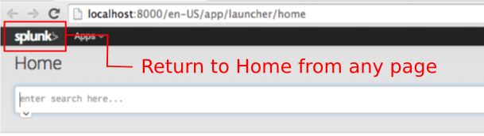
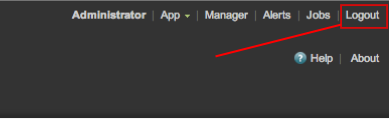
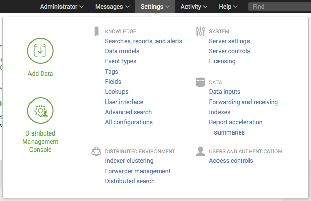

What's in this manual
In the Installation Manual, you can find:
- System requirements
- Licensing information
- Procedures for installing
- Procedures for upgrading from a previous version
...and more.
Note The Installation Manual details installing full Splunk Enterprise only. To install the Splunk universal forwarder, see "Universal forwarder deployment overview" in the Forwarding Data Manual. Unlike Splunk heavy and light forwarders, which are full Splunk Enterprise instances with some features changed or disabled, the universal forwarder is a separate executable with its own set of installation procedures. For an introduction to forwarders, see "About forwarding and receiving."
Find what you need
You can use the table of contents to the left of this panel, or search for what you want in the search box in the upper right.
If you're interested in more specific scenarios and best practices, go to the Splunk Community Wiki to see how other users Splunk IT.
What happened to parts of this manual?
To better align our documentation and make it more accessible to our customers, we moved information not associated with installing Splunk Enterprise from this manual to other manuals.
Most of the material has moved to the new Capacity Planning manual, which takes content from both this and the Distributed Deployment manual and puts it all in one place.
Plan your Splunk Enterprise installation
Installation overview
This topic discusses the steps required to install Splunk Enterprise on a computer. Read this topic and the contents of this chapter before you install Splunk Enterprise.
Installation basics
1. Review the system requirements for installation. Additional requirements might apply based on the operating system on which you install Splunk Enterprise and how you plan to use Splunk Enterprise.
2. See "Components of a Splunk Enterprise deployment" to learn about the Splunk Enterprise ecosystem, and "Splunk architecture and processes" to learn what the installer puts on your computer.
3. See "Secure your Splunk Enterprise installation" and, where appropriate, secure the machine on which you plan to install Splunk Enterprise.
4. Download the installation package for your system from the Splunk Enterprise download page.
5. Perform the installation by using the step-by-step installation instructions for your operating system.
6. If this is the first time you have installed Splunk Enterprise, see the Search Tutorial to learn how to index data into Splunk and search that data using the Splunk Enterprise search language.
7. After you install Splunk Enterprise, calculate how much space you need to index your data. See "Estimate your storage requirements" for more information.
8. To run Splunk Enterprise in a production environment and to understand how much hardware such an environment requires, see the Capacity Planning manual.
Upgrading or migrating a Splunk Enterprise instance?
To upgrade from an earlier version of Splunk Enterprise, see "How to upgrade Splunk Enterprise" in this manual for information and specific instructions. For tips on migrating from one version to another, see the "READ THIS FIRST" topic for the version that you want to upgrade to. This topic is in "Upgrade or Migrate Splunk Enterprise" in this manual.
If you want to know how to move a Splunk Enterprise instance from one system to another, see "Migrate a Splunk instance" in this manual.
System requirements
Before you download and install Splunk Enterprise, read this topic to learn about the computing environments that Splunk supports. See the download page for the latest version to download. See the release notes for details on known and resolved issues.
For a discussion of hardware planning for deployment, see the Capacity Planning manual.
If you have ideas or requests for new features to add to future releases, contact Splunk Support. You can also review our product road map.
Supported server hardware architectures
Splunk offers support for 32- and 64-bit architectures on some platforms. See the download page for details.
Supported Operating Systems
The following tables list the available computing platforms for Splunk Enterprise. The first table lists availability for *nix operating systems and the second lists availability for Windows operating systems.
Determine whether Splunk Enterprise is available for your platform.
1. Find the operating system on which you want to install Splunk Enterprise in the left column.
2. Read across the columns to find the computing architecture in the center column that matches your environment.
The tables show availability for several types of Splunk software, as shown in the two columns on the right: Splunk Enterprise, Splunk Free, Splunk Trial, and Splunk Universal Forwarder. A '✔' in the box that intersects your computing platform and the Splunk software type means that Splunk software is available for that platform. An empty box means that Splunk is not available for that platform. If you do not see your platform or architecture listed, the software is not available for that platform and architecture.
Some boxes have other characters. See the bottom of each table to find out what the additional characters represent.
Unix operating systems
| Operating system | Architecture | Enterprise | Free | Trial | Universal Forwarder |
|---|---|---|---|---|---|
| Solaris 10 and 11* | x86 (64-bit) | ✔ | ✔ | ✔ | ✔ |
| SPARC | ✔ | ✔ | ✔ | ✔ | |
| x86 (32-bit) | * | * | * | * | |
| Linux, 2.6+ | x86 (64-bit) | ✔ | ✔ | ✔ | ✔ |
| x86 (32-bit) | ✔ | ✔ | ✔ | ✔ | |
| Linux, 3.0+ | x86 (64-bit) | ✔ | ✔ | ✔ | ✔ |
| x86 (32-bit) | ✔ | ✔ | ✔ | ✔ | |
| PowerLinux, 2.6+ | PowerPC | ✔ | |||
| zLinux, 2.6+ | s390x | ✔ | |||
| FreeBSD 7** | x86 (32-bit) | ✔ | |||
| FreeBSD 8 | x86 (64-bit) | ✔ | ✔ | ✔ | ✔ |
| x86 (32-bit) | ✔ | ||||
| FreeBSD 9 | x86 (64-bit) | ✔ | ✔ | ✔ | ✔ |
| Mac OS X 10.8, 10.9, and 10.10 | Intel | ✔ | ✔ | ✔ | |
| AIX 6.1 and 7.1 | PowerPC | ✔ | ✔ | ✔ | ✔ |
| HP/UX†11i v2 and 11i v3 | Itanium | ✔ |
* Splunk Enterprise is available for Solaris 10. Solaris 11 does not support 32-bit Splunk Enterprise installs.
** See the notes on FreeBSD 7 compatibility below.
†You must use gnu tar to unpack the HP/UX installation archive.
Windows operating systems
The table lists the Windows computing platforms that Splunk Enterprise supports.
| Operating system | Architecture | Enterprise | Free | Trial | Universal Forwarder |
|---|---|---|---|---|---|
| Windows Server 2003 and Server 2003 R2 | x86 (64-bit) | ✔ | |||
| x86 (32-bit) | ✔ | ||||
| Windows Server 2008 | x86 (64-bit) | ✔ | ✔ | ✔ | ✔ |
| x86 (32-bit) | *** | *** | *** | ✔ | |
| Windows Server 2008 R2, Server 2012, and Server 2012 R2 | x86 (64-bit) | ✔ | ✔ | ✔ | ✔ |
| Windows 7 | x86 (64-bit) | ✔ | ✔ | ✔ | |
| x86 (32-bit) | *** | *** | ✔ | ||
| Windows 8 | x86 (64-bit) | ✔ | ✔ | ✔ | |
| x86 (32-bit) | *** | *** | ✔ | ||
| Windows 8.1 | x86 (64-bit) | ✔ | ✔ | ✔ | |
| x86 (32-bit) | *** | *** | ✔ |
*** Splunk supports but does not recommend using Splunk Enterprise on this platform and architecture.
Operating system notes and additional information
Windows
Certain parts of Splunk Enterprise on Windows require elevated user permissions to function properly. For information about what is required, see the following topics:
- "Splunk architecture and processes" in this manual.
- "Choose the user Splunk should run as" in this manual.
- "Considerations for deciding how to monitor remote Windows data" in the Getting Data In manual.
FreeBSD 7.x
To run Splunk 6.x on 32-bit FreeBSD 7.x, install the compat6x libraries. Splunk Support supplies best effort support for users running on FreeBSD 7.x.
See "Install Splunk on FreeBSD 7" in the Community Wiki.
Deprecated operating systems and features
As we version the Splunk product, we gradually deprecate support of older operating systems. See "Deprecated features" in the Release Notes for information on which platforms and features have been deprecated or removed entirely.
Creating and editing configuration files on non-UTF-8 OSes
Splunk Enterprise expects configuration files to be in ASCII or Universal Character Set Transformation Format-8-bit (UTF-8) format. If you edit or create a configuration file on an OS that does not use UTF-8 character set encoding, then ensure that the editor you are using is configured to save in ASCII/UTF-8.
IPv6 platform support
All Splunk-supported OS platforms are supported for use with IPv6 configurations except for the following:
- AIX
- HP/UX on PA-RISC architecture
- Solaris 9
See "Configure Splunk for IPv6" in the Admin Manual for details on Splunk IPv6 support.
Supported browsers
Splunk Enterprise supports the following browsers:
- Firefox ESR (31.2) and latest
- Internet Explorer 9, 10, and 11
- Safari (latest)
- Chrome (latest)
Confirm that you have the latest version of Adobe Flash installed to render any charts that use options that the JSChart module does not support. For information, see "About JSChart" in Developing Views and Apps for Splunk Web.
Do not use Internet Explorer in Compatibility Mode when you access Splunk Web. Splunk Web warns you that your browser is not supported. If you must use IE in compatibility mode for other applications, you must use a supported browser for Splunk Web.
Internet Explorer version 9 does not support file uploads. Use IE version 10 or later.
Recommended hardware
If you are performing a comprehensive evaluation of Splunk Enterprise for production deployment, use hardware typical of your production environment. This hardware should meet or exceed the recommended hardware capacity specifications below.
For a discussion of hardware planning for production deployment, see "Introduction to capacity planning for Splunk Enterprise" in the Capacity Planning manual.
Splunk Enterprise and virtual machines
If you run Splunk Enterprise in a virtual machine (VM) on any platform, performance decreases. This is because virtualization works by abstracting the hardware on a system into resource pools from which VMs defined on the system draw as needed. Splunk Enterprise needs sustained access to a number of resources, particularly disk I/O, for indexing operations. Running Splunk in a VM or alongside other VMs can cause reduced indexing and search performance.
Recommended and minimum hardware capacity
The following requirements are accurate for a single instance installation with light to moderate use. For significant enterprise and distributed deployments, see the Capacity Planning manual.
| Platform | Recommended hardware capacity/configuration | Minimum supported hardware capacity |
|---|---|---|
| Non-Windows platforms | 2x six-core, 2+ GHz CPU, 12GB RAM, Redundant Array of Independent Disks (RAID) 0 or 1+0, with a 64 bit OS installed. | 1x1.4GHz CPU, 1GB RAM |
| Windows platforms | 2x six-core, 2+ GHz CPU, 12GB RAM, RAID 0 or 1+0, with a 64-bit OS installed. | Intel Nehalem CPU or equivalent at 2GHz, 2GB RAM |
RAID 0 disk configurations do not provide fault-tolerance. Confirm that a RAID 0 configuration meets your data reliability needs before deploying a Splunk Enterprise indexer on a system configured with RAID 0.
- All configurations other than universal and light forwarder instances require at least the recommended hardware configuration.
- The minimum supported hardware guidelines are designed for personal use of Splunk. The requirements for Splunk in a production environment are significantly higher.
Splunk recommends that you maintain a minimum of 5GB of hard disk space available on any Splunk instance, including forwarders, in addition to the space required for any indexes. See "Estimate your storage requirements" in the Capacity Planning Manual for more information. Failure to maintain this level of free space can result in degraded performance, operating system failure, and data loss.
Hardware requirements for universal and light forwarders
| Recommended | Dual-core 1.5GHz+ processor, 1GB+ RAM |
| Minimum | 1.0Ghz processor, 512MB RAM |
Supported file systems
| Platform | File systems |
|---|---|
| Linux | ext2/3/4, reiser3, XFS, NFS 3/4 |
| Solaris | UFS, ZFS, VXFS, NFS 3/4 |
| FreeBSD | FFS, UFS, NFS 3/4, ZFS |
| Mac OS X | HFS, NFS 3/4 |
| AIX | JFS, JFS2, NFS 3/4 |
| HP-UX | VXFS, NFS 3/4 |
| Windows | NTFS, FAT32 |
If you run Splunk Enterprise on a file system that is not listed, the software might run a startup utility named locktest to test the viability of the file system. Locktest is a program that tests the start up process. If locktest fails, then the file system is not suitable for running Splunk Enterprise.
Considerations regarding file descriptor limits (FDs) on *nix systems
Splunk Enterprise allocates file descriptors on *nix systems for actively monitored files, forwarder connections, deployment clients, users running searches, and so on.
Usually, the default file descriptor limit (controlled by the ulimit -n command on a *nix-based OS) is 1024. Your Splunk administrator determines the correct level, but it should be at least 8192. Even if Splunk Enterprise allocates a single file descriptor for each of the activities, it is easy to see how a few hundred files being monitored, a few hundred forwarders sending data, and a handful of very active users on top of reading and writing to and from the datastore can exhaust the default setting.
The more tasks your Splunk Enterprise instance does, the more FDs it needs. You should increase the ulimit value if you start to see your instance run into problems with low FD limits.
See about ulimit in the Troubleshooting Manual.
This consideration is not applicable to Windows-based systems.
Considerations regarding Network File System (NFS)
When you use Network File System (NFS) as a storage medium for Splunk indexing, consider all of the ramifications of file level storage.
Use block level storage rather than file level storage for indexing your data.
In environments with reliable, high-bandwidth, low-latency links, or with vendors that provide high-availability, clustered network storage, NFS can be an appropriate choice. However, customers who choose this strategy should work with their hardware vendor to confirm that the storage platform they choose operates to the specification in terms of both performance and data integrity.
If you use NFS, be aware of the following issues:
- Splunk Enterprise does not support "soft" NFS mounts. These are mounts that cause a program attempting a file operation on the mount to report an error and continue in case of a failure.
- Only "hard" NFS mounts (mounts where the client continues to attempt to contact the server in case of a failure) are reliable with Splunk Enterprise.
- Do not disable attribute caching. If you have other applications that require disabling or reducing attribute caching, then you must provide Splunk Enterprise with a separate mount with attribute caching enabled.
- Do not use NFS mounts over a wide area network (WAN). Doing so causes performance issues and can lead to data loss.
Considerations regarding solid state drives
Solid state drives (SSDs) deliver significant performance gains over conventional hard drives for Splunk in "rare" searches - searches that request small sets of results over large swaths of data - when used in combination with bloom filters. They also deliver performance gains with concurrent searches overall.
Considerations regarding Common Internet File System (CIFS)/Server Message Block (SMB)
Splunk Enterprise supports the use of the CIFS/SMB protocol for the following purposes, on shares hosted by Windows hosts only:
- Search head pooling.
- Storage of cold or frozen Index buckets.
When you use a CIFS resource for storage, confirm that the resource has write permissions for the user that connects to the resource at both the file and share levels. If you use a third-party storage device, ensure that its implementation of CIFS is compatible with the implementation that your Splunk Enterprise instance runs as a client.
Do not attempt to index data to a mapped network drive on Windows (for example "Y:\" mapped to an external share.) Splunk Enterprise disables any index it encounters with a non-physical drive letter.
Considerations regarding environments that use the transparent huge pages memory management scheme
If you run a Unix environment that makes use of transparent huge memory pages, see "Transparent huge memory pages and Splunk performance" before you attempt to install Splunk Enterprise.
No such scheme exists on Windows operating systems.
Splunk Enterprise architecture and processes
This topic discusses the internal architecture and processes of Splunk Enterprise at a high level. If you're looking for information about third-party components used in Splunk Enterprise, see the credits section in the Release notes.
Splunk Enterprise Processes
A Splunk Enterprise server installs a process on your host, splunkd.
splunkd is a distributed C/C++ server that accesses, processes and indexes streaming IT data. It also handles search requests. splunkd processes and indexes your data by streaming it through a series of pipelines, each made up of a series of processors.
- Pipelines are single threads inside the
splunkdprocess, each configured with a single snippet of XML. - Processors are individual, reusable C or C++ functions that act on the stream of IT data passing through a pipeline. Pipelines can pass data to one another through queues.
splunkdsupports a command-line interface for searching and viewing results. - New for version 6.2,
splunkdalso provides the Splunk Web user interface. It allows users to search and navigate data stored by Splunk servers and to manage your Splunk deployment through a Web interface. It communicates with your Web browser through REpresentational State Transfer (REST). -
splunkdruns a Web server on port 8089 with SSL/HTTPS turned on by default. - It also runs a Web server on port 8000 with SSL/HTTPS turned off by default.
splunkweb installs as a legacy-only service on Windows only. Prior to version 6.2, it provided the Web interface for Splunk Enterprise. Now, it installs and runs, but quits immediately. You can configure it to run in "legacy mode" by changing a configuration parameter.
On Windows systems, splunkweb.exe is a third-party, open-source executable that Splunk Enterprise renames from pythonservice.exe. Because it is a renamed file, it does not contain the same file version information as other Splunk Enterprisefor Windows binaries.
Read information on other Windows third-party binaries distributed with Splunk Enterprise.
Splunk Enterprise and Windows in Safe Mode
Neither the splunkd, the splunkweb, nor the SplunkForwarder services starts if Windows is in Safe Mode. If you attempt to start Splunk Enterprise from the Start Menu while in Safe Mode, Splunk Enterprise does not alert you to the fact that its services are not running.
Additional processes for Splunk Enterprise on Windows
On Windows instances of Splunk Enterprise, in addition to the two services described, Splunk Enterprise uses additional processes when you create specific data inputs on a Splunk Enterprise instance. These inputs run when configured by certain types of Windows-specific data input.
splunk.exe
splunk.exe is the control application for the Windows version of Splunk Enterprise. It provides the command-line interface (CLI) for the program. It lets you start, stop, and configure Splunk Enterprise, similar to the *nix splunk program.
Important: splunk.exe requires an elevated context to run because of how it controls the splunkd and splunkweb processes. Splunk Enterprise might not function correctly if this executable is not given the appropriate permissions on your Windows system. This is not an issue if you install Splunk Enterprise as the Local System user.
splunk-admon
splunk-admon.exe is spawned by splunkd whenever you configure an Active Directory (AD) monitoring input. splunk-admon attachs to the nearest available AD domain controller and gathers change events generated by AD. Splunk Enterprise stores these events in an index.
splunk-perfmon
splunk-perfmon.exe runs when you configure Splunk to monitor performance data on the local machine. This service attaches to the Performance Data Helper libraries, which query the performance libraries on the system and extract performance metrics both instantaneously and over time.
splunk-netmon
splunk-netmon runs when you configure Splunk to monitor Windows network information on the local machine.
splunk-regmon
splunk-regmon.exe runs when you configure a Registry monitoring input in Splunk. This input initially writes a baseline for the Registry as it currently exists (if desired), then monitors changes to the Registry over time. Those changes come back into Splunk as searchable events.
splunk-winevtlog
You can use this utility to test defined event log collections, and it outputs events as they are collected for investigation. Splunk has a Windows event log input processor built into the engine.
splunk-winhostmon
splunk-winhostmon runs when you configure a Windows host monitoring input in Splunk. This input gets detailed information about Windows hosts.
splunk-winprintmon
splunk-winprintmon runs when you configure a Windows print monitoring input in Splunk. This input gets detailed information about Windows printers and print jobs on the local system.
splunk-wmi
When you configure a performance monitoring, event log or other input against a remote computer, this program starts up. Depending on how you configure the input, either it attempts to attach to and read Windows event logs as they come over the wire, or it executes a Windows Query Language (WQL) query against the Windows Management Instrumentation (WMI) provider on the specified remote machine(s). Splunk then stores the events.
Architecture diagram
Information on Windows third-party binaries distributed with Splunk Enterprise
This topic provides additional information on the third-party Windows binaries that the Splunk Enterprise and the Splunk universal forwarder packages include.
For more information about Splunk's universal forwarder, read "Deploy the universal forwarder" in the Forwarding Data Manual.
Third-party Windows binaries included with Splunk Enterprise
The following third-party Windows binaries ship with Splunk Enterprise. Except where indicated, only the Splunk Enterprise product includes these binaries.
These binaries provide functionality to Splunk Enterprise as shown in their individual descriptions. None of them contains file version information or authenticode signatures (certificates that prove the binary file's authenticity). Additionally, Splunk Enterprise does not provide support for debug symbols related to third-party modules.
Note: Only the third-party binaries, apps, and scripts that ship with Splunk Enterprise have been tested for Certified for Windows Server 2008 R2 (CFW2008R2) Windows Logo compliance. Any other binaries, apps, or scripts, such as those you download from the Internet, have not been tested for this compliance.
Archive.dll
Libarchive.dll is a multi-format archive and compression library.
Both Splunk Enterprise and the Splunk universal forwarder include this binary.
Bzip2.exe
Bzip2 is a freely available, patent-free (see below), high-quality data compressor. It typically compresses files to within 10% to 15% of the best available techniques (the PPM family of statistical compressors), while being about twice as fast at compression and six times faster at decompression.
Jsmin.exe
Jsmin.exe is an executable that removes white space and comments from JavaScript files, reducing their size.
Libexslt.dll
Libexslt.dll is the Extensions to Extensible Stylesheet Language Transformation (EXSLT) dynamic link C library developed for libxslt (a part of the GNOME project).
Both Splunk Enterprise and the Splunk universal forwarder include this binary.
Libxml2.dll
Libxml2.dll is the Extensible Markup Language (XML) C parser and toolkit developed for the GNOME project (but usable outside of the GNOME platform),
Both Splunk Enterprise and the Splunk universal forwarder include this binary.
Libxslt.dll
Libxslt.dll is the XML Stylesheet Language for Transformations (XSLT) dynamic link C library developed for the GNOME project. XSLT itself is an XML language to define transformation for XML. Libxslt is based on libxml2 the XML C library developed for the GNOME project. It also implements most of the EXSLT set of processor-portable extensions functions and some of Saxon's evaluate and expressions extensions.
Both Splunk Enterprise and the Splunk universal forwarder include this binary.
Minigzip.exe
Minigzip.exe is the minimal implementation of the ’gzip’ compression tool.
Openssl.exe
The OpenSSL Project is a collaborative effort to develop a robust, commercial-grade, full-featured, and open source toolkit implementing the Secure Sockets Layer (SSL v2/v3) and Transport Layer Security (TLS v1) protocols as well as a full-strength general purpose cryptography library.
Both Splunk Enterprise and the Splunk universal forwarder include this binary.
Python.exe
Python.exe is the Python programming language binary for Windows.
Pythoncom.dll
Pythoncom.dll is a module that encapsulates the Object Linking and Embedding (OLE) automation API for Python.
Pywintypes27.dll
Pywintypes27.dll is a module that encapsulates Windows types for Python version 2.7.
Installation instructions
You can get detailed installation procedures for your operating system:
Secure your Splunk Enterprise installation
About securing Splunk Enterprise
When you set up and begin using your Splunk Enterprise installation or upgrade, perform some additional steps to ensure that Splunk Enterprise and your data are secure. Taking the proper steps to secure Splunk Enterprise reduces its attack surface and mitigates the risk and impact of most vulnerabilities.
This section highlights some of the ways that you can secure Splunk Enterprise before, during, and after installation. The Securing Splunk Enterprise manual provides more information about the ways you can secure Splunk Enterprise.
Secure your system before you install Splunk Enterprise
Before you install Splunk Enterprise, make your operating system secure. Harden all Splunk Enterprise server operating systems.
- If your organization does not have internal hardening standards, use the CIS hardening benchmarks.
- At a minimum, limit shell and command-line access to your Splunk Enterprise servers.
- Secure physical access to all Splunk Enterprise servers.
- Ensure that Splunk Enterprise end users practice physical and endpoint security.
Install Splunk Enterprise securely
Verify integrity and signatures for your Splunk Installation when you download and install Splunk Enterprise.
Verify Integrity
Verify your Splunk Enterprise download using hash functions such as Message Digest 5 (MD5) and SHA-512 to compare the hashes. Use a trusted version of OpenSSL. For example:
./openssl dgst -md5 <filename-splunk-downloaded.zip>
or
./openssl dgst -sha512 <filename-splunk-downloaded.zip>
Verify Signatures
Verify the authenticity of the downloaded RPM package by using the Splunk GnuPG Public key.
1. Download the GnuPG Public key file. (This link is over TLS.)
2. Install the key by using:
rpm --import <filename>
3. Verify the package signature by using:
rpm -K <filename>
More ways to secure Splunk Enterprise
After you install Splunk Enterprise, you have more options to secure your configuration.
Configure user authentication and role-based access control
Set up users and use roles to control access. Splunk Enterprise lets you configure users in several ways. See the following information in Securing Splunk Enterprise.
- The built-in authentication system. See "Set up user authentication with Splunk Enterprise native authentication."
- LDAP. See "Set up user authentication with LDAP."
- A scripted authentication API for use with an external authentication system, such as Pluggable Authentication Modules (PAM) or Remote Access Dial-In User Server (RADIUS). See "Set up user authentication with external systems."
After you configure users, you can assign roles that determine and control capabilities and access levels. See "About role-based user access."
Use SSL certificates to configure encryption and authentication
Splunk Enterprise comes with a set of default certificates and keys that, when enabled, provide encryption and data compression. You can also use your own certificates and keys to secure communications between your browser and Splunk Web as well as data sent from forwarders to a receiver, such as an indexer.
See "About securing Splunk with SSL" in this manual.
Audit Splunk Enterprise
Splunk Enterprise includes audit features that let you track the reliability of your data.
- Monitor files and directories in Getting Data In
- Search for audit events in Securing Splunk Enterprise
Harden your Splunk Enterprise installation
See the following topics in Securing Splunk Entrprise to harden your installation.
- Deploy secure passwords across multiple servers
- Use Splunk Enterprise Access Control Lists
- Secure your service accounts
- Disable unnecessary Splunk Enterprise components
- Secure Splunk Enterprise on your network
Install Splunk Enterprise on Windows
Choose the Windows user Splunk Enterprise should run as
You choose which Windows user Splunk Enterprise should run as when you install Splunk Enterprise on Windows.
When you run the Windows Splunk Enterprise installer, it presents you with the option to select the user that Splunk Enterprise should run as. Read this topic before you install to understand the ramifications of choosing the user type.
The user you choose depends on what you want Splunk Enterprise to monitor
The user Splunk Enterprise runs as determines what it can monitor. The Local System user has access to all data on the local machine, but nothing else. A user other than Local System has access to whatever data you want it to, but give the user that access before you install Splunk Enterprise.
If you know that the computer on which you are installing Splunk Enterprise will not access remote Windows data, then see "Install on Windows" in this manual. To install using the command prompt, see "Install on Windows using the command line."
If you need to access remote Windows data, then continue with this topic to learn about the user you should install Splunk Enterprise as.
About the Local System user and other user choices
The Windows Splunk Enterprise installer provides two ways to install it: as the Local System user or as another existing user on your Windows computer or network, which you designate.
To do any of the following actions with Splunk Enterprise, you must install it as a domain user:
- Read Event Logs remotely
- Collect performance counters remotely
- Read network shares for log files
- Enumerate the Active Directory schema using Active Directory monitoring
This is not an all-inclusive list.
The user that you specify must meet the following requirements:
- Be a member of the Active Directory domain or forest that you want to monitor (when using AD).
- Be a member of the local Administrators group on the server on which you install Splunk Enterprise.
- Have specific user security rights assigned to it before you install Splunk Enterprise. See "Minimum permissions requirements" later in this topic.
Caution If the user does not satisfy these minimum requirements, Splunk Enterprise installation might fail. Even if installation succeeds, Splunk Enterprise might not run correctly, or at all.
The user also has unique password constraints. See "Splunk user accounts and password concerns" later in this topic.
If you are not sure which user Splunk Enterprise should run as, then see "Considerations for deciding how to monitor remote Windows data" in the Getting Data In manual for information on how to configure the Splunk Enterprise user with the access it needs.
User accounts and password concerns
An issue that arises when you install Splunk Enterprise with a user account is that any active password enforcement security policy controls the password's validity. If your Windows server or network enforces password changes, consider the following issues:
- Before the password expires, change it, reconfigure Splunk Enterprise services on every machine to use the changed password, and then restart Splunk Enterprise.
- Configure the account so that its password never expires.
- Use a managed service account. See "Use managed service accounts on Windows Server 2008, Server 2012, and Windows 7" in this topic.
Use managed service accounts on Windows Server 2008, Windows Server 2012, Windows 7, and Windows 8.x
If you run Windows Server 2008, Windows Server 2008 R2, Windows Server 2012, Windows Server 2012 R2, Windows 7, or Windows 8.x in Active Directory, and your AD domain has at least one Windows Server 2008 R2 or Server 2012 domain controller, you can install Splunk Enterprise to run as a managed service account (MSA).
The benefits of using an MSA are:
- Increased security from the isolation of accounts for services.
- Administrators no longer need to manage the credentials or administer the accounts. Passwords automatically change after they expire. You do not have to manually set passwords or restart services associated with these accounts.
- Administrators can delegate the administration of these accounts to non-administrators.
Some important things to understand before you install Splunk Enterprise with an MSA are:
- The MSA requires the same permissions as a domain account on the machine that runs Splunk Enterprise.
- The MSA must be a local administrator on the machine that runs Splunk Enterprise.
- You cannot use the same account on different computers, as you would with a domain account.
- You must correctly configure and install the MSA on the machine that runs Splunk Enterprise before you install Splunk Enterprise on the machine. See "Service Accounts Step-by-Step Guide" (http://technet.microsoft.com/en-us/library/dd548356%28WS.10%29.aspx) on MS Technet.
To install Splunk Enterprise using an MSA, see "Prepare your Windows network for a Splunk Enterprise installation as a network or domain user" in this manual.
Security and remote access considerations
Minimum permissions requirements
If you install Splunk Enterprise as a domain user, then a minimum number of permissions are required on the server that runs the software.
The following is a list of the minimum user rights and permissions that the splunkd and splunkforwarder services require when you install Splunk Enterprise using a domain user. Depending on the sources of data you want to monitor, the Splunk Enterprise user might need additional permissions.
Required basic permissions for the splunkd or splunkforwarder services
- Full control over the Splunk Enterprise installation directory.
- Read access to any flat files that you want to index.
Required Local/Domain Security Policy user rights assignments for the splunkd or splunkforwarder services
- Permission to log on as a service.
- Permission to log on as a batch job.
- Permission to replace a process-level token.
- Permission to act as part of the operating system.
- Permission to bypass traverse checking.
Caution If you do not assign these permissions to the Splunk Enterprise user before installation you might have a failed Splunk Enterprise installation, or an installation that does not function correctly, or at all.
Note Splunk Enterprise does not require these permissions when it runs as the Local System account.
How to assign these permissions
This section contains concepts about how to assign the appropriate user rights and permissions to the Splunk Enterprise service account before you install. For instructions, see "Prepare your Windows network for a Splunk Enterprise installation as a network or domain user" in this manual.
Use Group Policy to assign rights to multiple machines
To assign the policy settings to a number of workstations and servers in your AD domain or forest, you can define a Group Policy object (GPO) with these specific rights, and deploy that GPO across the domain. See "Prepare your Windows network for a Splunk Enterprise installation as a network or domain user" in this manual.
After you create and enable the GPO, the workstations and servers in your domain pick up the changes either during the next scheduled AD replication cycle (usually every 1.5 to 2 hours) or at the next boot time. Alternatively, you can force AD replication by using the GPUPDATE command-line utility on the server on which you want to update Group Policy.
When you set user rights, rights assigned by a GPO override identical Local Security Policy rights on a machine. You cannot change this setting. To retain existing rights that are defined through Local Security Policy on a machine, you must also assign these rights within the GPO.
Troubleshoot permissions issues
The rights described are the rights that the splunkd and splunkforwarder services require. Other rights might be needed, depending on your usage and what data you want to access. Many user rights assignments and other Group Policy restrictions can prevent Splunk Enterprise from running. If you have problems, consider using a tool such as Process Monitor or GPRESULT to troubleshoot GPO application in your environment.
Prepare your Windows network for an installation as a network or domain user
| Important security information |
|---|
| These instructions require full administrative access to the computer and/or Active Directory domain you want to prepare for Splunk Enterprise operations. Do not attempt to perform this procedure without this access.
The instructions require you to make changes to your Windows network. Because of the low-level access requirements for Splunk Enterprise operations, these changes are necessary if you want to run Splunk Enterprise as a user other than the Local System user. This can present a significant security risk. To mitigate that risk, you can also prevent the user that Splunk Enterprise runs as from logging in interactively, as well as limit the number of workstations from where the user can log in.
|
You can prepare your Windows network to allow Splunk Enterprise installation as a network or domain user other than the "Local System" user.
The instructions have been tested for Windows Server 2008 R2, Windows Server 2012 and Windows Server 2012 R2, and might differ for other versions of Windows.
The rights you assign using these instructions are the minimum rights required for a successful Splunk Enterprise installation. You might need to assign additional rights, either within the Local Security Policy or a Group Policy object (GPO), or to the user and group accounts you create, for Splunk Enterprise to access the data you want.
Prepare Active Directory for Splunk installation as a domain user
Prepare your Active Directory to allow for installations of Splunk Enterprise or the Splunk universal forwarder as a domain account.
Follow Microsoft's Best Practices (http://technet.microsoft.com/en-us/library/bb727085.aspx) when you create users and groups. This typically involves creating a specific Organizational Unit for groups within the organization.
You must meet the following requirements:
- You run Active Directory.
- You are a domain administrator for the AD domains that you want to configure.
- The computers on which you plan to install Splunk Enterprise are members of the AD domain.
Create groups
1. Run the Active Directory Users and Computers tool by selecting Start > Administrative Tools > Active Directory Users and Computers.
2. After the program loads, select the domain that you want to prepare for Splunk Enterprise operations.
3. Double-click an existing container folder, or create an Organization Unit by selecting New > Group from the Action menu.
4. Select Action > New > Group.
5. Type a name that represents Splunk Enterprise user accounts, for example, Splunk Accounts.
6. Ensure that the Group scope is set to Domain Local and Group type is set to Security.
7. Click OK to create the group.
8. Create a second group and specify a name that represents Splunk Enterprise enabled computers, for example, Splunk Enabled Computers. This group contains computer accounts that are assigned the permissions to run Splunk Enterprise as a domain user.
9. Ensure that the Group scope is set to Domain Local and Group type is set to Security.
Assign users and computers to groups
If you have not created the user accounts that you want to use to run Splunk Enterprise, now is a good time to do so. Follow Microsoft best practices for creating users and groups if you do not have your own internal policy.
After you create the user accounts, add the accounts to the Splunk Accounts group, and add the computer accounts of the computers that will run Splunk Enterprise to the Splunk Enabled Computers group.
After you do, you can exit Active Directory Users and Computers.
Define a Group Policy object (GPO)
1. Run the Group Policy Management Console (GPMC) tool by selecting Start > Administrative Tools > Group Policy Management.
2. In the tree view pane on the left, select Domains.
3. Click the Group Policy Objects folder.
4. In the Group Policy Objects in <your domain> folder, right-click and select New.
5. Type a name that represents the fact that the GPO will assign user rights to the servers you apply it to. For example, "Splunk Access."
6. Leave the Source Starter GPO field set to "(none)".
7. Click OK to save the GPO.
Add rights to the GPO
1. While in the GPMC, right-click on the newly created group policy object and select Edit.
2. In the Group Policy Management Editor, in the left pane, browse to Computer Configuration -> Policies -> Windows Settings -> Security Settings -> Local Policies -> User Rights Assignment.
- a. In the right pane, double-click on the Act as part of the operating system entry.
- b. In the window that opens, check the Define these policy settings checkbox.
- c. Click Add User or Group…
- d. In the dialog that opens, click Browse…
- e. In the Select Users, Computers, Service Accounts, or Groups dialog that opens, type in the name of the "Splunk Accounts" group you created earlier, then click Check Names…
- Windows underlines the name if it is valid. Otherwise it tells you that it cannot find the object and prompts you for an object name again.
- f. Click OK to close the "Select Users…" dialog.
- g. Click OK again to close the "Add User or Group" dialog.
- h. Click OK again to close the rights properties dialog.
3. Repeat Steps 2a-2h for the following additional rights:
- Bypass traverse checking
- Log on as a batch job
- Log on as a service
- Replace a process-level token
Change per-server Administrators group membership
The following steps restrict who is a member of the Administrators group on the server(s) to which you apply this GPO.
Caution: Make sure to add all accounts that need access to the Administrators group on each server to the Restricted Groups policy setting. Failure to do so can cause you to lose administrative access to the servers to which you apply this GPO!
1. While still in the Group Policy Management Editor window, in the left pane, browse to Computer Configuration -> Policies -> Windows Settings -> Security Settings -> Restricted Groups.
- a. In the right pane, right-click and select Add Group… in the pop-up menu that appears.
- b. In the dialog that appears, type in Administrators and click OK.
- c. In the properties dialog that appears, click the Add button next to Members of this group:.
- d. In the Add Member dialog that appears, click Browse…"
- e. In the Select Users, Computers, Service Accounts, or Groups dialog that opens, type in the name of the "Splunk Accounts" group you created earlier, then click Check Names…
- Windows underlines the name if it is valid. Otherwise it tells you that it cannot find the object and prompts you for an object name again.
- f. Click OK to close the Select Users… dialog.
- g. Click OK again to close the "Add User or Group" dialog.
- h. Click OK again to close the group properties dialog.
2. Repeat Steps 1a-1h for the following additional users or groups:
- Domain Admins
- any additional users who need to be a member of the Administrators group on every server to which you apply the GPO.
3. Close the Group Policy Management Editor window to save the GPO.
Restrict GPO application to select computers
1. While still in the GPMC, in the GPMC's left pane, select the GPO you created and added rights to, if it is not already selected.
- GPMC displays information about the GPO in the right pane.
2. In the right pane, under Security Filtering, click Add…
3. In the Select User, Computer, or Group dialog that appears, type in "Splunk Enabled Computers" (or the name of the group that represents Splunk-enabled computers that you created earlier.)
4. Click Check Names. If the group is valid, Windows underlines the name. Otherwise, it tells you it cannot find the object and prompts you for an object name again.
5. Click OK to return to the GPO information window.
6. Repeat Steps 2-5 to add the "Splunk Accounts" group (the group that represents Splunk user accounts that you created earlier.)
7. Under Security Filtering, click the Authenticated Users entry to highlight it.
8. Click Remove.
- GPMC removes the "Authenticated Users" entry from the "Security Filtering" field, leaving only "Splunk Accounts" and "Splunk Enabled Computers."
Apply the GPO
1. While still in the GPMC, in the GPMC's left pane, select the domain that you want to apply the GPO you created.
2. Right click on the domain, and select Link an Existing GPO… in the menu that pops up.
Note: If you only want the GPO to affect the OU that you created earlier, then select the OU instead and right-click to bring up the pop-up menu.
3. In the Select GPO dialog that appears, select the GPO you created and edited, and click OK. GPMC applies the GPO to the selected domain.
4. Close GPMC by selecting File > Exit from the GPMC menu.
Note: Active Directory controls when Group Policy updates occur and GPOs get applied to computers in the domain. Typically, replication happens every 90-120 minutes. You must wait this amount of time before attempting to install Splunk as a domain user. Alternatively, you can force a Group Policy update by running GPUPDATE /FORCE from a command prompt on the computer on which you want to update Group Policy.
Install Splunk with a managed system account
Alternatively, you can install Splunk Enterprise with a managed system account. Follow these instructions to do so:
1. Create and configure the MSA that you plan to use to monitor Windows data.
Note: You can use the instructions in "Prepare your Active Directory to run Splunk Enterprise services as a domain account" earlier in this topic to assign the MSA the appropriate security policy rights and group memberships.
2. Install Splunk from the command line as the "Local System" user.
Important: You must install Splunk Enterprise from the command line and use the LAUNCHSPLUNK=0 flag to keep Splunk Enterprise from starting after installation is completed.
3. After installation is complete, use the Windows Explorer or the ICACLS command line utility to grant the MSA "Full Control" permissions to the Splunk Enterprise installation directory and all its sub-directories.
Note: You might need to break NTFS permission inheritance from parent directories above the Splunk Enterprise installation directory and explicitly assign permissions from that directory and all subdirectories.
4. Follow the instructions in the topic "Correct the user selected during Windows installation" in this manual to change the default user for Splunk's service account. In this instance, the correct user is the MSA you configured prior to installing Splunk Enterprise.
Important: You must append a dollar sign ($) to the end of the username when completing Step 4 in order for the MSA to work properly. For example, if the MSA is SPLUNKDOCS\splunk1, then you must enter SPLUNKDOCS\splunk1$ in the appropriate field in the properties dialog for the service. You must do this for both the splunkd and splunkweb services.
5. Confirm that the MSA has the "Log on as a service" right.
Note: If you use the Services control panel to make the service account changes, Windows grants this right to the MSA automatically.
6. Start Splunk Enterprise. It runs as the MSA configured above, and will have access to all data that the MSA has access to.
Use PowerShell to configure your AD domain
You can also use PowerShell to configure your Active Directory environment for Splunk Enterprise services.
To do so, first open a PowerShell prompt (as Administrator). Then, complete the following steps:
Create the Splunk user account
1. Import the ActiveDirectory PowerShell module, if needed:
> Import-Module ActiveDirectory
2. Enter the following to create a new user:
> New-ADUser –Name <user> `
-SamAccountName <user> `
-Description “Splunk Service Account†`
-DisplayName “Service:Splunk†`
-Path “<organizational unit LDAP path>†`
-AccountPassword (Read-Host –AsSecureString “Account Passwordâ€) `
-CannotChangePassword $true `
-ChangePasswordAtLogon $false `
-PasswordNeverExpires $true `
-PasswordNotRequired $false `
-SmartcardLogonRequired $false `
-Enabled $true `
-LogonWorkstations “<server>†`
In this example:
- The command creates an account whose password cannot be changed, is not forced to change after first logon, and does not expire.
- <user> is the name of the user you want to create.
- <organizational unit LDAP path> is the name of the OU in which to put the new user, specified in X.500 format, for example:
CN=Managed Service Accounts,DC=splk,DC=com. - <server> is a single server or comma-separated list which specifies the server(s) that the account can log in from.
Note: The LogonWorkstations argument is not required, but allows you to limit which workstations a managed service account can log into the domain from.
Configure the Splunk Enterprise server
Once you have configured a user account, use PowerShell to configure the server with the correct permissions for the account to run Splunk Enterprise.
Caution: This is an advanced procedure. Only perform these steps if you feel comfortable doing so and understand the ramifications of using them, including problems that can occur due to typos and improperly-formatted files.
In the following examples:
- <user> is the name of the user you created that will run Splunk Enterprise.
- <domain> is the domain in which the user resides.
- <computer> is the remote computer you want to connect to in order to make changes.
To configure local security policy from PowerShell:
1. Connect to the server that you wish to configure.
- If using the local server, simply log in and open a PowerShell prompt, if you have not already.
- If connecting to a remote server, create a new
PSSessionon the remote host as shown below. - You might need to disable Windows Firewall before you can make the remote connection. To do so, read "Need to Disable Windows Firewall" (http://technet.microsoft.com/en-us/library/cc766337(v=ws.10).aspx) on MS TechNet (for versions of Windows Server up to Server 2008 R2, and "Firewall with Advanced Security Administration with Windows PowerShell" (http://technet.microsoft.com/en-us/library/hh831755.aspx), also on MS TechNet.
> Enter-PSSession -Computername <computer>
2. Add the service account to the local Administrators group:
> $group = [ADSI]â€WinNT://<server>/Administrators,groupâ€
> $group.Add(“WinNT://<domain>/<user>â€)
3. Create a backup file that contains the current state of user rights settings on the local machine:
> secedit /export /areas USER_RIGHTS /cfg OldUserRights.inf
4. Use the backup to create a new user rights information file that assigns the Splunk Enterprise user elevated rights when imported:
> Get-Content OldUserRights.inf `
| Select-String –Pattern `
“(SeTcbPrivilege|SeChangeNotify|SeBatchLogon|SeServiceLogon|SeAssignPrimaryToken|SeSystemProfile)†`
| %{ “$_,<domain>\<user>†}
| Out-File NewUserRights.inf
5. Create a header for the new policy information file and concatenate the header and the new information file together:
> ( “[Unicode]â€, “Unicode=yes†) | Out-File Header.inf
> ( “[Version]â€, “signature=`â€`$CHICAGO`$`â€â€, “Revision=1â€) | Out-File –Append Header.inf
> ( “[Privilege Rights]†) | Out-File –Append Header.inf
> Get-Content NewUserRights.inf | Out-File –Append Header.inf
6. Review the policy information file to ensure that the header was properly written, and that the file has no syntax errors in it.
7. Import the file into the computer's local security policy database:
> secedit /import /cfg Header.inf /db C:\splunk-lsp.sdb
> secedit /configure /db C:\splunk-lsp.sdb
Prepare a local machine or non-AD network for Splunk Enterprise installation
If you are not using Active Directory, follow these instructions to give administrative access to the user you want Splunk to run as on the computers you want to install Splunk Enterprise on.
1. Give the user Splunk Enterprise should run as administrator rights by adding the user to the local Administrators group.
2. Start Local Security Policy by selecting Start > Administrative Tools > Local Security Policy.
- Local Security Policy launches and displays the local security settings.
3. In the left pane, expand Local Policies and then click User Rights Assignment.
- a. In the right pane, double-click on the Act as part of the operating system entry.
- b. Click Add User or Group…
- c. In the dialog that opens, click Browse…
- d. In the Select Users, Computers, Service Accounts, or Groups dialog that opens, type in the name of the "Splunk Computers" group you created earlier, then click Check Names...
- Windows underlines the name if it is valid. Otherwise it tells you that it cannot find the object and prompts you for an object name again.
- e. Click OK to close the "Select Users…" dialog.
- f. Click OK again to close the "Add User or Group" dialog.
- g. Click OK again to close the rights properties dialog.
4. Repeat Steps 3a-3g for the following additional rights:
- Bypass traverse checking
- Log on as a batch job
- Log on as a service
- Replace a process-level token
Once you have completed these steps, you can then install Splunk as the desired user.
Install on Windows
| Important |
|---|
| New for Splunk Enterprise version 6.2, the installation procedure has changed significantly. Read "Installation Options" in this topic before proceeding. |
This topic describes the procedure for installing Splunk Enterprise on Windows with the Graphical User Interface (GUI)-based installer. More options (such as silent installation) are available if you install from the command line.
Caution: You can no longer install or run the 32-bit version of Splunk Enterprise for Windows on a 64-bit Windows system. You also cannot install Splunk Enterprise on a machine that runs an unsupported OS (for example, on a machine that runs Windows Server 2003.) See "System requirements."
If you attempt to run the installer in such a way, it warns you and prevents the installation.
Note: If you want to install the Splunk universal forwarder, see the Forwarding Data manual: "Universal forwarder deployment overview". Unlike Splunk Enterprise heavy and light forwarders, which are full Splunk Enterprise instances with some features changed or disabled, the universal forwarder is an entirely separate executable, with its own set of installation procedures. For an introduction to forwarders, see "About forwarding and receiving", also in the Forwarding Data Manual.
Upgrading?
If you plan to upgrade Splunk Enterprise, review "How to upgrade Splunk" for instructions and migration considerations before proceeding.
Note that Splunk Enterprise does not support changing the management or HTTP ports during an upgrade.
Before you install
Choose the Windows user Splunk should run as
Before installing, be sure to read "Choose the Windows user Splunk should run as" to determine which user account Splunk should run as to address your specific needs. The user you choose has specific ramifications on what you need to do prior to installing the software, and more details can be found there.
Splunk Enterprise for Windows and anti-virus software
The Splunk Enterprise indexing subsystem requires lots of disk throughput. Any software with a device driver that intermediates between Splunk Enterprise and the operating system can rob Splunk Enterprise of processing power, causing slowness and even an unresponsive system. This includes anti-virus software.
It's extremely important to configure such software to avoid on-access scanning of Splunk Enterprise installation directories and processes, before starting a Splunk installation.
Install Splunk Enterprise via the GUI installer
The Windows installer is an MSI file.
1. To start the installer, double-click the splunk.msi file.
The installer runs and displays the Splunk Enterprise Installer panel.
2. To continue the installation, check the "Check this box to accept the License Agreement" checkbox. This activates the "Customize Installation" and "Install" buttons.
Note: If you want to view the license agreement, click on the "View License Agreement" button.
Installation Options
New for Splunk Enterprise 6.2, the Windows installer gives you two choices: Install with the default installation settings, or configure all settings prior to installing.
The installer does the following by default:
- Installs Splunk Enterprise in
\Program Files\Splunkon the system drive (the drive that booted your Windows system.) - Installs Splunk Enterprise with the default management and Web ports.
- Configures Splunk Enterprise to run as the Local System user. Read "Choose the user Splunk Enterprise should run as" in this manual to understand the ramifications.
- Creates a Start Menu shortcut for the software.
3a. If you want to change any of these default installation settings, click the "Customize Options" button and proceed with the instructions in "Customize Options" in this topic.
3b. Otherwise, click the "Install" button to install the software with the defaults. Then, continue with Step 8.
Customize Options
Note: On each panel, you can click Next to continue, Back to go back a step, or Cancel to cancel the installation and quit the installer.
The installer displays the "Install Splunk Enterprise to" panel.
Note: By default, the installer puts Splunk Enterprise into \Program Files\Splunk on the system drive. This documentation set refers to the Splunk Enterprise installation directory as $SPLUNK_HOME or %SPLUNK_HOME%.
4. Click "Change…" to specify a different location to install Splunk Enterprise, or click "Next" to accept the default value.
The installer displays the "Choose the user Splunk Enterprise should run as" panel.
Splunk Enterprise installs and runs two Windows services, splunkd and splunkweb. New for version 6.2, the splunkd service handles all Splunk Enterprise operations, and the splunkweb service installs to run only in legacy mode.
These services install and run as the user you specify on this panel. You can choose to run Splunk Enterprise as the Local System user, or another user.
Important: If you choose to run Splunk Enterprise as another user, that user must:
- Be a member of an Active Directory domain (you cannot install Splunk Enterprise as a local machine account other than the Local System account)
- Have local administrator privileges on the machine which you are performing the installation, and
- Have specific user rights, and other additional permissions, depending on the kinds of data you want to collect from remote machines.
See "Choose the Windows user Splunk Enterprise should run as" for additional information on these permissions and rights requirements.
If you have not read the above linked topic beforehand, then stop the installation now and read that topic first.
5. Select a user type and click Next.
If you selected the Local System user, proceed to Step 7. Otherwise, the installer displays the Logon Information: specify a username and password panel.
6. Specify a username and password to install and run Splunk Enterprise and click Next.
Important: You must specify the user name in domain\username format. Failure to include the domain name when specifying the user will cause the installation to fail. This must be a valid user in your security context, and must be an active member of an Active Directory domain. Splunk Enterprise must run under either the Local System account or a valid user account with a valid password and local administrator privileges.
The installer displays the installation summary panel.
7. Click "Install" to proceed.
The installer runs and displays the Installation Complete panel.
Caution: If you specified the wrong user during the installation procedure, you will see two pop-up error windows explaining this. If this occurs, Splunk Enterprise installs itself as the Local System user by default. Splunk Enterprise does not start automatically in this situation. You can proceed through the final panel of the installation, but uncheck the "Launch browser with Splunk" checkbox to prevent your browser from launching. Then, use these instructions to switch to the correct user before starting Splunk.
8. If desired, check the boxes to Launch browser with Splunk and Create Start Menu Shortcut now. Click Finish.
The installation completes, Splunk Enterprise starts and launches in a supported browser if you checked the appropriate box.
Note: The first time you access Splunk Web after installation, login with the default username admin and password changeme. Do not use the username and password you provided during the installation process.
Launch Splunk in a Web browser
To access Splunk Enterprise after you start it on your machine, you can either:
- Click the Splunk icon in Start > Programs > Splunk
or
- Open a Web browser and navigate to
http://localhost:8000.
Log in using the default credentials: username: admin and password: changeme.
The first time you log into Splunk Enterprise successfully, it prompts you right away to change your password. You can do so by entering a new password and clicking the Change password button, or you can do it later by clicking the Skip button.
Note: If you do not change your password, remember that anyone who has access to the machine and knows the default password can access your Splunk instance. Be sure to change the admin password as soon as possible and make a note of what you changed it to.
Avoid Internet Explorer Enhanced Security pop-ups
If you're using Internet Explorer to access Splunk Web, add the following URLs to the allowed Intranet group or fully trusted group to avoid getting "Enhanced Security" pop-ups:
-
quickdraw.splunk.com - the URL of your Splunk Enterprise instance
Change the Splunk Web or splunkd service ports
If you want the Splunk Web service or the splunkd service to use a different port, you can change the defaults.
To change the Splunk Web service port:
- Open a command prompt.
- Change to the
%SPLUNK_HOME%\bindirectory. - Type in
splunk set web-port ####and press Enter.
To change the splunkd port:
- Open a command prompt, if one isn't already.
- Change to the
%SPLUNK_HOME%\bindirectory. - Type in
splunk set splunkd-port ####and press Enter.
Note: If you specify a port and that port is not available, or if the default port is unavailable, Splunk will automatically select the next available port.
Install or upgrade license
If you are performing a new installation of Splunk Enterprise or switching from one license type to another, you must install or update your license.
What's next?
Now that you've installed Splunk Enterprise, you can find out what comes next, or you can review these topics in the Getting Data In Manual for information on adding Windows data:
- Monitor Windows Event Log data
- Monitor Windows Registry data
- Monitor WMI-based data
- Considerations for deciding how to monitor remote Windows data.
Install on Windows using the command line
You can install Splunk Enterprise on Windows from the command line.
Important: To install the Splunk universal forwarder, see "Universal forwarder deployment overview" in Forwarding Data. Unlike Splunk Enterprise heavy and light forwarders, which are full Splunk instances with some features changed or disabled, the universal forwarder is a separate executable, with its own set of installation procedures. For an introduction to forwarders, see "About forwarding and receiving" in Forwarding Data.
Run 64-bit Splunk Enterprise on 64-bit hardware. The performance is improved over the 32-bit version. If you run the 32-bit installer on a 64-bit system, the installer will give you a warning.
When to install from the command line?
You can manually install Splunk Enterprise on individual machines from a command prompt or PowerShell window. Here are some scenarios where installing from the command line is useful:
- You want to install Splunk Enterprise, but do not want it to start right away.
- You want to automate installation of Splunk Enterprise with a script.
- You want to install Splunk Enterprise on a system that you will clone later.
- You want to use a deployment tool such as Group Policy or System Center Configuration Manager.
- You want to install Splunk Enterprise on a system that runs a version of Windows Server Core.
Install using PowerShell
You can install Splunk Enterprise from a PowerShell window. The steps required to do so are identical to those required to install from a command prompt.
Upgrading?
To upgrade Splunk Enterprise, review "How to upgrade Splunk" for instructions and migration considerations.
Be aware that Splunk Enterprise does not support changing the management or HTTP ports during an upgrade.
Before you install
Choose the Windows user Splunk Enterprise should run as
Before you install, see "Choose the Windows user Splunk Enterprise should run as" to determine which user account Splunk Enterprise should run as to address your data collection needs. The user you choose has specific ramifications on what you need to do before you install the software.
Prepare your domain for a Splunk Enterprise installation as a domain user
Before you install, see "Prepare your Windows network for a Splunk Enterprise installation as a network or domain user" for instructions about how to configure your domain to run Splunk Enterprise.
Splunk Enterprise for Windows and antivirus software
The Splunk Enterprise indexing subsystem requires a lot of disk throughput. Antivirus software or any software with a device driver that intermediates between Splunk Enterprise and the operating system, can significantly decrease processing power, causing slowness and even an unresponsive system.
It is important to configure such software to avoid on-access scanning of Splunk Enterprise installation directories and processes, before you start an installation.
Install Splunk Enterprise from the command line
You install Splunk Enterprise from the command line by invoking msiexec.exe. You perform the same procedure if you run PowerShell.
For 32-bit platforms, use splunk-<...>-x86-release.msi:
msiexec.exe /i splunk-<...>-x86-release.msi [<flag>]... [/quiet]
For 64-bit platforms, use splunk-<...>-x64-release.msi:
msiexec.exe /i splunk-<...>-x64-release.msi [<flag>]... [/quiet]
The value of <...> varies according to the particular release; for example, splunk-5.0-125454-x64-release.msi.
Command-line flags let you configure Splunk Enterprise at installation. Using command-line flags, you can specify a number of settings, including but not limited to:
- Which Windows event logs to index.
- Which Windows Registry hives to monitor.
- Which Windows Management Instrumentation (WMI) data to collect.
- The user Splunk Enterprise runs as. See "Choose the Windows user Splunk Enterprise should run as" for information about what type of user you should install your Splunk instance with.
- An included application configuration for Splunk to enable (such as the light forwarder.)
- Whether Splunk Enterprise should start automatically when the installation is finished.
Note: The first time you access Splunk Web after installation, log in with the default username admin and password changeme.
Supported flags
The following is a list of the flags you can use when installing Splunk for Windows via the command line.
Important: The Splunk universal forwarder is a separate executable, with its own installation flags. Review the supported installation flags for the universal forwarder in "Deploy a Windows universal forwarder from the command line" in the Forwarding Data manual.
| Flag | What it's for | Default |
|---|---|---|
AGREETOLICENSE=Yes|No
| Use this flag to agree to the EULA. This flag must be set to Yes for a silent installation.
| No
|
INSTALLDIR="<directory_path>"
| Use this flag to specify directory to install. Splunk's installation directory is referred to as $SPLUNK_HOME or %SPLUNK_HOME% throughout this documentation set.
| C:\Program Files\Splunk
|
SPLUNKD_PORT=<port number>
| Use these flags to specify alternate ports for splunkd and splunkweb to use.
Note: If you specify a port and that port is not available, Splunk will automatically select the next available port. | 8089
|
WEB_PORT=<port number>
| Use these flags to specify alternate ports for splunkd and splunkweb to use.
Note: If you specify a port and that port is not available, Splunk will automatically select the next available port. | 8000
|
|
| Use these flags to specify whether or not Splunk should index a particular Windows event log:
Application log Security log System log Forwarder log Setup log Note: You can specify multiple flags. | 0 (off)
|
|
| Use this flag to specify whether or not Splunk should
index events from capture a baseline snapshot of the Windows Registry user hive ( Note: You can set both of these at the same time. | 0 (off)
|
|
| Use this flag to specify whether or not Splunk should
index events from capture a baseline snapshot of the Windows Registry machine hive ( Note: You can set both of these at the same time. | 0 (off)
|
|
| Use these flags to specify which popular WMI-based performance metrics Splunk should index:
CPU usage Local disk usage Free disk space Memory statistics Caution: If you need this instance of Splunk to monitor remote Windows data, then you must also specify the There are many more WMI-based metrics that Splunk can index. Review "Monitor WMI Data" in the Getting Data In Manual for specific information. | 0 (off)
|
LOGON_USERNAME="<domain\username>"
| Use these flags to provide domain\username and password information for the user that Splunk will run as. The splunkd and splunkweb services are configured with these credentials. For the LOGON_USERNAME flag, you must specify the domain with the username in the format "domain\username."
These flags are required if you want this Splunk Enterprise installation to monitor any remote data. Review "Choose the Windows user Splunk should run as" in this manual for additional information about which credentials to use. | none |
SPLUNK_APP="<SplunkApp>"
| Use this flag to specify an included Splunk application configuration to enable for this installation of Splunk. Currently supported options for <SplunkApp> are: SplunkLightForwarder and SplunkForwarder. These specify that this instance of Splunk will function as a light forwarder or heavy forwarder, respectively. Refer to the "About forwarding and receiving" topic in the Forwarding Data manual for more information.
Important: The full version of Splunk does not enable the universal forwarder. The universal forwarder is a separate downloadable executable, with its own installation flags. Note: If you specify either the Splunk forwarder or light forwarder here, you must also specify FORWARD_SERVER="<server:port>". To install Splunk Enterprise with no applications at all, simply omit this flag. | none |
FORWARD_SERVER="<server:port>"
| Use this flag *only* when you are also using the SPLUNK_APP flag to enable either the Splunk heavy or light forwarder. Specify the server and port of the Splunk server to which this forwarder will send data.
Important: This flag requires that the | none |
DEPLOYMENT_SERVER="<host:port>"
| Use this flag to specify a deployment server for pushing configuration updates. Enter the deployment server's name (hostname or IP address) and port. | none |
LAUNCHSPLUNK=0/1
| Use this flag to specify whether or not Splunk should start up automatically on system boot.
Important: If you enable the Splunk Forwarder by using the | 1 (on)
|
INSTALL_SHORTCUT=0/1
| Use this flag to specify whether or not the installer should create a shortcut to Splunk on the desktop and in the Start Menu. | 1 (on)
|
Silent installation
To run the installation silently, add /quiet to the end of your installation command string. If your system has User Access Control enabled (the default on some systems), you must run the installation as Administrator. To do this:
- When opening a command prompt, right click and select "Run As Administrator".
- Use this command window to run the silent install command.
Note: This also works when using PowerShell as your command line interface.
Examples
The following are some examples of using different flags.
Silently install Splunk Enterprise to run as the Local System user
msiexec.exe /i Splunk.msi /quiet
Enable the Splunk heavy forwarder and specify credentials for the user Splunk Enterprise will run as
msiexec.exe /i Splunk.msi SPLUNK_APP="SplunkForwarder" FORWARD_SERVER="<server:port>" LOGON_USERNAME="AD\splunk" LOGON_PASSWORD="splunk123"
Enable SplunkForwarder, enable indexing of the Windows System event log, and run the installer in silent mode
msiexec.exe /i Splunk.msi SPLUNK_APP="SplunkForwarder" FORWARD_SERVER="<server:port>" WINEVENTLOG_SYS_ENABLE=1 /quiet
Where "<server:port>" are the server and port of the Splunk server to which this machine should send data.
What's next?
Now that you've installed Splunk Enterprise, what comes next?
You can also review this topic about considerations for deciding how to monitor Windows data in the Getting Data In manual.
Correct the user selected during Windows installation
If you selected "other user" during the Splunk Enterprise installation, and that user does not exist or you mistyped the information, you can go into the Windows Service Control Manager and enter the correct information, as long as you have not started Splunk. If you have started Splunk, stop it, uninstall it, and reinstall it.
If you specified an invalid user during the Windows GUI installation process, you see two popup error windows.
1. In Control Panel > Administrative Tools > Services, find the splunkd and splunkweb services. They are not started and are owned by the Local System User.
2. Right-click each service, and select Properties.
3. Click the Log On tab.
4. Click the This account button and fill in the correct domain\user name and password.
5. Click Apply.
6. Click OK.
7. If you run Splunk Enterprise in legacy mode, repeat steps 2 through 6 for the second service. You must do this for both splunkd and splunkweb).
Note: Do not run Splunk Enterprise in legacy mode permanently. See "Start and stop Splunk Enterprise" for information about legacy mode.
8. You can start one or both services from the Service Manager or from the command-line interface.
Install Splunk Enterprise on Unix, Linux or Mac OS X
Install on Linux
You can install Splunk Enterprise on Linux using RPM or DEB packages or a tar file.
Note: To install the Splunk universal forwarder, see "Universal forwarder deployment overview" in the Forwarding Data manual. Unlike Splunk heavy and light forwarders, which are full Splunk Enterprise instances with some features changed or disabled, the universal forwarder is a separate executable, with its own set of installation procedures. For an introduction to forwarders, see "About forwarding and receiving."
Upgrading?
If you are upgrading, see "How to upgrade Splunk" for instructions and migration considerations before you upgrade.
Tar file installation
To install Splunk Enterprise on a Linux system, expand the tar file into an appropriate directory using the tar command:
tar xvzf splunk_package_name.tgz
The default installation directory is splunk in the current working directory. To install into /opt/splunk, use the following command:
tar xvzf splunk_package_name.tgz -C /opt
Note: When you install Splunk Enterprise with a tar file:
- Some non-GNU versions of
tarmight not have the-Cargument available. In this case, to install in/opt/splunk, eithercdto/optor place the tar file in/optbefore you run thetarcommand. This method works for any accessible directory on your machine's file system. - Splunk Enterprise does not create the
splunkuser. If you want Splunk Enterprise to run as a specific user, you must create the user manually before you install. - Ensure that the disk partition has enough space to hold the uncompressed volume of the data you plan to keep indexed.
RedHat RPM install
Ensure that the splunk build rpm package you want is available locally on the target server. Verify that the file is readable and executable by the the Splunk user. If needed change access:
chmod 744 splunk_package_name.rpm
To install the Splunk RPM in the default directory /opt/splunk:
rpm -i splunk_package_name.rpm
To install Splunk in a different directory, use the --prefix flag:
rpm -i --prefix=/opt/new_directory splunk_package_name.rpm
Note: Installing with rpm in a non-default directory is not recommended, as RPM offers no safety net at time of upgrade, if --prefix does not agree then the upgrade will go awry.
To upgrade an existing Splunk Enterprise installation that resides in /opt/splunk using the RPM:
rpm -U splunk_package_name.rpm
Note: Upgrading rpms is upgrading the rpm package, not upgrading Splunk Enterprise. rpm upgrades can be done only when using the rpm in the past. There is no smooth transition from tar installs to rpm installs. This is not a Splunk Enterprise issue, but a fundamental packaging issue.
To upgrade an existing Splunk Enterprise installation that was done in a different directory, use the --prefix flag:
rpm -U --prefix=/opt/existing_directory splunk_package_name.rpm
Note: If you do not specify with --prefix for your existing directory, rpm will install in the default location of /opt/splunk.
For example, to upgrade to the existing directory of $SPLUNK_HOME=/opt/apps/splunk enter the following:
rpm -U --prefix=/opt/apps splunk_package_name.rpm
To Replace an existing Splunk Enterprise installation
rpm -i --replacepkgs --prefix=/splunkdirectory/ splunk_package_name.rpm
If you want to automate your RPM install with kickstart, add the following to your kickstart file:
./splunk start --accept-license
./splunk enable boot-start
Note: The second line is optional for the kickstart file.
Enable Splunk Enterprise to start the system at boot by adding it to /etc/init.d/ Run this command as root or sudo and specify the user that Splunk Enterprise should run as.
./splunk enable boot-start -user splunkuser
Debian DEB install
To install the Splunk DEB package:
dpkg -i splunk_package_name.deb
Note: You can install the Splunk DEB package only in the default location, /opt/splunk.
What gets installed
Splunk package status:
dpkg --status splunk
List all packages:
dpkg --list
Start Splunk
Splunk Enterprise can run as any user on the local system. If you run it as a non-root user, make sure that it has the appropriate permissions to read the inputs that you specify. Refer to the instructions for running Splunk Enterprise as a non-root user.
To start Splunk Enterprise from the command-line interface, run the following command from $SPLUNK_HOME/bin directory, where $SPLUNK_HOME is the directory into which you installed Splunk Enterprise:
./splunk start
By convention, this document uses:
-
$SPLUNK_HOMEto identify the path to your Splunk Enterprise installation. -
$SPLUNK_HOME/bin/to indicate the location of the command-line interface.
Startup options
The first time you start Splunk Enterprise after a new installation, you must accept the license agreement. To start Splunk Enterprise and accept the license in one step:
$SPLUNK_HOME/bin/splunk start --accept-license
Note: There are two dashes before the accept-license option.
Launch Splunk Web and log in
After you start Splunk Enterprise and accept the license agreement, you can launch Splunk Web.
1. In a browser window, access Splunk Web at http://<hostname>:port.
-
hostnameis the host machine. -
portis the port you specified during the installation (the default port is 8000).
Note Navigate to HTTP the first time you access Splunk Enterprise.
2. Splunk Web prompts you for login information before it launches. The default is user name admin and password changeme. If you switch to Splunk Free, you bypass this logon page in future sessions.
What's next?
Now that you've installed Splunk Enterprise, what comes next?
Uninstall Splunk Enterprise
To learn how to uninstall Splunk Enterprise, read "Uninstall Splunk Enterprise" in this manual.
Install on Solaris
You can install Splunk Enterprise on Solaris with a PKG packages, or a tar file.
Upgrading?
If you are upgrading, review "How to upgrade Splunk" for instructions and migration considerations before proceeding.
Install Splunk
Splunk Enterprise for Solaris is available as a PKG file or a tar file.
PKG file install
The PKG installation package includes a request file that prompts you to answer a few questions before Splunk installs.
pkgadd -d ./splunk_product_name.pkg
A list of the available packages is displayed.
- Select the packages you wish to process (the default is "all").
The installer then prompts you to specify a base installation directory.
- To install into the default directory,
/opt/splunk, leave this blank.
PKG file upgrade
To upgrade an existing Splunk Enterprise installation using a PKG file, you should use the instance parameter, either in the system's default package installation configuration file (/var/sadm/install/admin/default) or in a custom configuration file that you define and call.
In the default or custom configuration file, set instance=overwrite. This will prevent the upgrade from creating a second splunk package (with instance=unique), or failing (with instance=quit). For information about the instance parameter, see the Solaris man page (man -s4 admin).
To upgrade Splunk Enterprise using the system's default package installation file, use the same command line as you would for a fresh install.
pkgadd -d ./splunk_product_name.pkg
The installer prompts you to overwrite any changed files, answer yes to every one.
To upgrade using a custom configuration file, type:
pkgadd -a conf_file -d ./splunk_product_name.pkg
To run the upgrade silently (and not have to answer yes for every file overwrite), type:
pkgadd -n -d ./splunk_product_name.pkg
tar file install
To install Splunk Enterprise on a Solaris system, expand the tar file into an appropriate directory using the tar command:
tar xvzf splunk_package_name.tar.Z
The default install directory is splunk in the current working directory. To install into /opt/splunk, use the following command:
tar xvzf splunk_package_name.tar.Z -C /opt
Note: When you install Splunk Enterprise with a tar file:
- Some non-GNU versions of
tarmight not have the-Cargument available. In this case, if you want to install in/opt/splunk, eithercdto/optor place the tar file in/optbefore running thetarcommand. This method will work for any accessible directory on your machine's filesystem. - If the
gzipbinary is not present on your system, you can use theuncompresscommand instead. - Splunk Enterprise does not create the
splunkuser automatically. If you want it to run as a specific user, you must create the user manually before installing. - Ensure that the disk partition has enough space to hold the uncompressed volume of the data you plan to keep indexed.
What gets installed
Splunk package info:
pkginfo -l splunk
List all packages:
pkginfo
Start Splunk
Splunk Enterprise can run as any user on the local system. If you run it as a non-root user, make sure that it has the appropriate permissions to read the inputs that you specify. For more information, refer to the instructions on running Splunk as a non-root user.
To start Splunk Enterprise from the command line interface, run the following command from $SPLUNK_HOME/bin directory (where $SPLUNK_HOME is the directory into which you installed Splunk):
./splunk start
By convention, the Splunk documentation uses:
-
$SPLUNK_HOMEto identify the path to your Splunk installation. -
$SPLUNK_HOME/bin/to indicate the location of the command line interface.
Startup options
The first time you start Splunk Enterprise after a new installation, you must accept the license agreement. To start Splunk Enterprise and accept the license in one step:
$SPLUNK_HOME/bin/splunk start --accept-license
Note: There are two dashes before the accept-license option.
Launch Splunk Web and log in
After you start Splunk Enterprise and accept the license agreement,
1. In a browser window, access Splunk Web at http://mysplunkhost:port, where:
-
mysplunkhostis the host machine. -
portis the port you specified during the installation (8000).
2. Splunk Web prompts you for login information (default, username admin and password changeme) before it launches. If you switch to Splunk Free, you will bypass this logon page in future sessions.
What's next?
Now that you've installed Splunk Enterprise, what comes next?
Uninstall Splunk Enterprise
To learn how to uninstall Splunk Enterprise, read "Uninstall Splunk Enterprise" in this manual.
Install on Mac OS X
You can install Splunk Enterprise on Mac OS X using a DMG package, or a tar file.
Upgrading?
If you are upgrading, review "How to upgrade Splunk Enterprise" for instructions and migration considerations before proceeding.
Installation options
The Mac OS build comes in two forms: a DMG package and a tar file. Below are instructions for the:
- Graphical (basic) and command line installs using the DMG file.
- tar file install.
Note: if you require two installations in different locations on the same host, use the tar file. The pkg installer cannot install a second instance. If one exists, it will remove it upon successful install of the second.
Graphical install
1. Double-click on the DMG file.
A Finder window containing splunk.pkg opens.
2. In the Finder window, double-click on splunk.pkg.
The Splunk Enterprise installer opens and displays the Introduction, which lists version and copyright information.
3. Click Continue.
The Select a Destination window opens.
4. Choose a location to install Splunk Enterprise.
- To install in the default directory,
/Applications/splunk, click on the harddrive icon. - To select a different location, click Choose Folder...
5. Click Continue.
The pre-installation summary displays. If you need to make changes,
- Click Change Install Location to choose a new folder, or
- Click Back to go back a step.
6. Click Install.
Your installation will begin. It might take a few minutes.
7. When your install completes, click Finish. The installer places a shortcut on the Desktop.
Command line install
Use the following instructions to install from a Terminal window.
Important: To install Splunk Enterprise on Mac OS X from the command line, you must use the root user, or elevate privileges using the sudo command. If you use sudo, your account must be an Admin-level account.
1. To mount the dmg:
sudo hdid splunk_package_name.dmg
The Finder mounts the disk image onto the desktop. The image is available under /Volumes/SplunkForwarder <version> (note the space).
2. To Install
- To the root volume:
cd /Volumes/SplunkForwarder\ <version>
sudo installer -pkg .payload/splunk.pkg -target /
Note: There is a space in the disk image's name. Use a backslash to escape the space or wrap the disk image name in quotes.
- To a different disk of partition:
cd /Volumes/SplunkForwarder\ <version>
sudo installer -pkg .payload/splunk.pkg -target /Volumes\ Disk
Note: There is a space in the disk image's name. Use a backslash to escape the space or wrap the disk image name in quotes.
-target specifies a target volume, such as another disk, where Splunk will be installed in /Applications/splunk.
To install into a directory other than /Applications/splunk on any volume, use the graphical installer as described above.
tar file install
To install Splunk Enterprise on Mac OS X, expand the tar file into an appropriate directory using the tar command:
tar xvzf splunk_package_name.tgz
The default install directory is splunk in the current working directory. To install into /Applications/splunk, use the following command:
tar xvzf splunk_package_name.tgz -C /Applications
Note: When you install Splunk Enterprise with a tar file:
- Splunk Enterprise does not create the
splunkuser automatically. If you want it to run as a specific user, you must create the user manually before installing. - Ensure that the disk partition has enough space to hold the uncompressed volume of the data you plan to keep indexed.
Start Splunk
Splunk Enterprise can run as any user on the local system. If you run it as a non-root user, make sure that it has the appropriate permissions to read the inputs that you specify.
Start Splunk Enterprise from the Finder
To start Splunk Enterprise from the Finder, double-click the Splunk icon on the Desktop to launch the helper application, entitled "Splunk's Little Helper".
Note: The first time you run the helper application, it notifies you that it needs to perform a brief initialization. Click OK to allow Splunk Enterprise to initialize and set up the trial license.
Once the helper application loads, it displays a dialog that offers several choices:
- Start and Show Splunk: This option starts Splunk Enterprise and directs your web browser to open a page to Splunk Web.
- Only Start Splunk: This choice starts Splunk Enterprise, but does not open Splunk Web in a browser.
- Cancel: Tells the helper application to quit. This does not affect the Splunk Enterprise instance itself, only the helper application.
Once you make your choice, the Splunk helper application performs the requested application and terminates. You can run the helper application again to either show Splunk Web or stop Splunk.
The helper application can also be used to stop Splunk if it is already running.
Start Splunk Enterprise from the command line
To start Splunk Enterprise from the command line interface, run the following command from $SPLUNK_HOME/bin directory (where $SPLUNK_HOME is the directory into which you installed Splunk Enterprise):
./splunk start
By convention, this document uses:
-
$SPLUNK_HOMEto identify the path to your Splunk installation. -
$SPLUNK_HOME/bin/to indicate the location of the command line interface.
Startup options
The first time you start Splunk Enterprise after a new installation, you must accept the license agreement. To start Splunk Enterprise and accept the license in one step:
$SPLUNK_HOME/bin/splunk start --accept-license
Note: There are two dashes before the accept-license option.
Launch Splunk Web and log in
After you start Splunk Enterprise and accept the license agreement,
1. In a browser window, access Splunk Web athttp://<hostname>:port
-
hostnameis the host machine. -
portis the port you specified during the installation (the default port is 8000).
2. Splunk Web prompts you for login information (default, username admin and password changeme) before it launches. If you switch to Splunk Free, you will bypass this logon page in future sessions.
What's next?
Now that you've installed Splunk Enterprise, what comes next?
Uninstall Splunk Enterprise
To learn how to uninstall Splunk Enterprise, read "Uninstall Splunk Enterprise" in this manual.
Install on FreeBSD
Splunk Enterprise for FreeBSD comes in two forms: an installer (5.4-intel) and a tar file (i386). Both are gzipped tar (.tgz) files.
Upgrading?
If you are upgrading, review "How to upgrade Splunk Enterprise" for instructions and migration considerations before proceeding.
Prerequisites
For FreeBSD 8, Splunk Enterprise requires compatibility packages. To install the compatibility package:
1. Install the port:
portsnap fetch update
cd /usr/ports/misc/compat7x/ && make install clean
2. Add the package:
pkg_add -r compat7x-amd64
Basic install
To install Splunk Enterprise for FreeBSD using the intel installer:
pkg_add splunk_package_name-6.1-intel.tgz
Important: This installs Splunk Enterprise in the default directory, /opt/splunk. If /opt does not exist, you will need to create it prior to running the install command. If you don't, you might receive an error message. Splunk recommends that you create a symbolic link to another filesystem and install Splunk there, because FreeBSD best practices maintain a small root ("/") filesystem.
To install Splunk Enterprise in a different directory:
pkg_add -v -p /usr/splunk splunk_package_name-6.1-intel.tgz
The FreeBSD package system does not have native upgrade support. There are some add-on utilities which try to manage it, but this is not explicitly tested. To upgrade a package on FreeBSD you can either uninstall the prior package, and install the new package, or you can upgrade the existing installation using a tar file install as below.
tar file install
To install Splunk Enterprise on a FreeBSD system with a tar file, expand the file into an appropriate directory using the tar command:
tar xvzf splunk_package_name.tgz
The default install directory is splunk in the current working directory. To install into /opt/splunk, use the following command:
tar xvzf splunk_package_name.tgz -C /opt
Note: When you install Splunk Enterprise with a tar file:
- Some non-GNU versions of
tarmight not have the-Cargument available. In this case, if you want to install in/opt/splunk, eithercdto/optor place the tar file in/optbefore running thetarcommand. This method will work for any accessible directory on your machine's filesystem. - Splunk Enterprise does not create the
splunkuser automatically. If you want Splunk Enterprise to run as a specific user, you must create the user manually before installing. - Ensure that the disk partition has enough space to hold the uncompressed volume of the data you plan to keep indexed.
After you install
To ensure that Splunk Enterprise functions properly on FreeBSD, you must:
1. Add the following to /boot/loader.conf
kern.maxdsiz="2147483648" # 2GB
kern.dfldsiz="2147483648" # 2GB
machdep.hlt_cpus=0
2. Add the following to /etc/sysctl.conf:
vm.max_proc_mmap=2147483647
You must restart FreeBSD for the changes to effect.
If your server has less than 2 GB of memory, reduce the values accordingly.
What gets installed
To see the list of Splunk Enterprise packages:
pkg_info -L splunk
To list all packages:
pkg_info
Start Splunk Enterprise
Splunk Enterprise can run as any user on the local system. If you run it as a non-root user, make sure that it has the appropriate permissions to read the inputs that you specify.
To start Splunk Enterprise from the command line interface, run the following command from $SPLUNK_HOME/bin directory (where $SPLUNK_HOME is the directory into which you installed Splunk Enterprise):
./splunk start
By convention, this document uses:
-
$SPLUNK_HOMEto identify the path to your Splunk Enterprise installation. -
$SPLUNK_HOME/bin/to indicate the location of the command line interface.
Startup options
The first time you start Splunk Enterprise after a new installation, you must accept the license agreement. To start Splunk Enterprise and accept the license in one step:
$SPLUNK_HOME/bin/splunk start --accept-license
Note: There are two dashes before the accept-license option.
Launch Splunk Web and log in
After you start Splunk Enterprise and accept the license agreement,
1. In a browser window, access Splunk Web athttp://<hostname>:port
-
hostnameis the host machine. -
portis the port you specified during the installation (the default port is 8000).
2. Splunk Web prompts you for login information (default, username admin and password changeme) before it launches. If you switch to Splunk Free, you will bypass this logon page in future sessions.
What's next?
Now that you've installed Splunk Enterprise, what comes next?
Uninstall Splunk Enterprise
To learn how to uninstall Splunk Enterprise, read "Uninstall Splunk Enterprise" in this manual.
Install on AIX
You can install Splunk Enterprise on AIX using a tar file.
Important: The user Splunk is installed as must have permission to read /dev/random and /dev/urandom or the installation will fail.
Upgrading?
If you are upgrading, review "How to upgrade Splunk Enterprise" for instructions and migration considerations before proceeding.
Install Splunk Enterprise
The AIX install comes in tar file form.
When you install with the tar file:
- Splunk Enterprise does not create the
splunkuser automatically. If you want Splunk Enterprise to run as a specific user, you must create the user manually. - Be sure the disk partition has enough space to hold the uncompressed volume of the data you plan to keep indexed.
- We recommend you use GNU tar to unpack the tar files, as AIX tar can fail to unpack long file names, fail to overwrite files, and other problems. If you must use the system tar, be sure to check the output for error messages.
To install Splunk Enterprise on an AIX system, expand the tar file into an appropriate directory. The default install directory is /opt/splunk.
For AIX 5.3, check to make sure your service packs are up to date. Splunk Enterprise requires the following service level:
$ oslevel -r
5300-005
Start Splunk Enterprise
Splunk Enterprise can run as any user on the local system. If you run it as a non-root user, make sure that it has the appropriate permissions to read the inputs that you specify. Refer to the instructions for running Splunk Enterprise as a non-root user for more information.
To start Splunk Enterprise from the command line interface, run the following command from $SPLUNK_HOME/bin directory (where $SPLUNK_HOME is the directory into which you installed Splunk):
./splunk start
By convention, this document uses:
-
$SPLUNK_HOMEto identify the path to your Splunk installation. -
$SPLUNK_HOME/bin/to indicate the location of the command line interface.
Enable automatic starting of Splunk Enterprise at boot time
The AIX version of Splunk does not register itself to auto-start on reboot. However, you can do so by running the following command from the $SPLUNK_HOME/bin directory at a prompt:
./splunk enable boot-startThis command invokes the following system commands to register Splunk Enterprise and Splunk Web in the System Resource Controller (SRC):
mkssys -G splunk -s splunkd -p <path to splunkd> -u <splunk user> -a _internal_exec_splunkd -S -n 2 -f 9mkssys -G splunk -s splunkweb -p <path to python> -u <splunk user> -a _internal_exec_splunkweb -S -n 15 -f 9
When you enable automatic boot start, the SRC handles the run state of the Splunk Enterprise service. This means that you must use a different command to start and stop Splunk Enterprise manually:
-
/usr/bin/startsrc -s splunkdto start Splunk Enterprise. -
/usr/bin/stopsrc -s splunkdto stop Splunk Enterprise.
If you attempt to start and stop Splunk Enterprise using the ./splunk [start|stop] method from the $SPLUNK_HOME directory, the SRC catches the attempt and Splunk Enterprise displays the following message:
Splunk boot-start is enabled. Please use /usr/bin/[startsrc|stopsrc] -s splunkd to [start|stop] Splunk.To prevent this message from occurring and restore the ability to start and stop Splunk Enterprise from the $SPLUNK_HOME directory, disable boot start:
./splunk disable boot-start- For more information on the
mkssyscommand line arguments, see "Mkssys command" (http://publib.boulder.ibm.com/infocenter/pseries/v5r3/index.jsp?topic=/com.ibm.aix.cmds/doc/aixcmds3/mkssys.htm) on the IBM pSeries and AIX Information Center website. - For more information on the SRC, see "System resource controller" (https://www-01.ibm.com/support/knowledgecenter/#!/ssw_aix_71/com.ibm.aix.genprogc/src.htm) on the IBM Knowledge Center website.
Startup options
The first time you start Splunk Enterprise after a new installation, you must accept the license agreement. To start Splunk Enterprise and accept the license in one step:
$SPLUNK_HOME/bin/splunk start --accept-license
Note: There are two dashes before the accept-license option.
For more information, refer to "Splunk Enterprise startup options" in this manual.
Launch Splunk Web and log in
After you start Splunk Enterprise and accept the license agreement,
1. In a browser window, access Splunk Web athttp://<hostname>:port
-
hostnameis the host machine. -
portis the port you specified during the installation (the default port is 8000).
2. Splunk Web prompts you for login information (default, username admin and password changeme) before it launches. If you switch to Splunk Free, you will bypass this logon page in future sessions.
What's next?
Now that you've installed Splunk Enterprise, what comes next?
Uninstall Splunk Enterprise
To learn how to uninstall Splunk Enterprise, read "Uninstall Splunk Enterprise" in this manual.
Install on HP-UX
You can install Splunk Enterprise on HP/UX using a tar file.
To install Splunk Enterprise on an HP-UX system, expand the tar file, using GNU tar, into an appropriate directory. The default install directory is /opt/splunk.
NOTE: The system default tar on HP-UX will not successfully extract the Splunk Enterprise tar file. Either use GNU tar or unpack the tar on another platform.
When you install with the tar file:
- Splunk Enterprise does not create the
splunkuser automatically. If you want Splunk Enterprise to run as a specific user, you must create the user manually. - Be sure the disk partition has enough space to hold the uncompressed volume of the data you plan to keep indexed.
Upgrading?
If you are upgrading, review "How to upgrade Splunk Enterprise" for instructions and migration considerations before proceeding.
Start Splunk Enterprise
Splunk Enterprise can run as any user on the local system. If you run it as a non-root user, make sure that it has the appropriate permissions to read the inputs that you specify.
To start Splunk Enterprise from the command line interface, run the following command from $SPLUNK_HOME/bin directory (where $SPLUNK_HOME is the directory into which you installed Splunk Enterprise):
./splunk start
By convention, this document uses:
-
$SPLUNK_HOMEto identify the path to your Splunk Enterprise installation. -
$SPLUNK_HOME/bin/to indicate the location of the command line interface.
Note: The HP-UX version of Splunk Enterprise does not register itself to auto-start on reboot. However, you can register it by running the following command in the $SPLUNK_HOME/bin directory in a shell prompt:
./splunk enable boot-start
Startup options
The first time you start Splunk Enterprise after a new installation, you must accept the license agreement. To start Splunk Enterprise and accept the license in one step:
$SPLUNK_HOME/bin/splunk start --accept-license
Note: There are two dashes before the accept-license option.
Launch Splunk Web and log in
After you start Splunk Enterprise and accept the license agreement,
1. In a browser window, access Splunk Web athttp://<hostname>:port
-
hostnameis the host machine. -
portis the port you specified during the installation (the default port is 8000).
2. Splunk Web prompts you for login information (default, username admin and password changeme) before it launches. If you switch to Splunk Free, you will bypass this logon page in future sessions.
What's next?
Now that you've installed Splunk Enterprise, what comes next?
Uninstall Splunk Enterprise
To learn how to uninstall Splunk Enterprise, read "Uninstall Splunk Enterprise" in this manual.
Run Splunk Enterprise as a different or non-root user
Important: This topic is for non-Windows operating systems only. To learn how to install Splunk Enterprise on Windows using a user, read "Choose the user Splunk Enterprise should run as" in this manual.
You can run Splunk Enterprise as any user on the local system. If you run it as a non-root user, make sure it has the appropriate permissions to:
- Read the files and directories it is configured to watch. Some log files and directories might require root or superuser access to be indexed.
- Write to the Splunk Enterprise directory and execute any scripts configured to work with your alerts or scripted input.
- Bind to the network ports it is listening on. Network ports below 1024 are reserved ports that only the root user can bind to.
Note: Because ports below 1024 are reserved for root access only, Splunk can only listen on port 514 (the default listening port for syslog) if it is running as root. You can, however, install another utility (such as syslog-ng) to write your syslog data to a file and have Splunk monitor that file instead.
Instructions
To run Splunk Enterprise as a non-root user, you need to first install Splunk Enterprise as root. Then, before you start Splunk Enterprise for the first time, change the ownership of the $SPLUNK_HOME directory to the desired user. The following are instructions to install Splunk Enterprise and run it as a non-root user, splunk.
Note: In the following examples, $SPLUNK_HOME represents the path to the Splunk Enterprise installation directory.
1. As the root user, create the user and group, splunk.
For Linux, Solaris, and FreeBSD:
useradd splunk
groupadd splunk
For Mac OS:
You can use the System Preferences > Accounts panel to add users and groups.
2. As the root user, and using one of the packages (not a tar file), run the installation.
Important: Do not start Splunk Enterprise yet.
3. As the root user, invoke the chown command to change the ownership of the splunk directory and everything under it to the desired user.
chown -R splunk:splunk $SPLUNK_HOME
Note: If chown binary on your system does not support changing group ownership of files, you can use the chgrp command to do so. Refer to the man pages on your system for additional information.
4. Become the non-root user, either by logging out of the root account and logging in as that user, or by using the su command to become that user.
5. As the non-root user, start Splunk Enterprise.
$SPLUNK_HOME/bin/splunk start
Also, if you want to start Splunk Enterprise as the splunk user while you are logged in as a different user, you can use the sudo command:
sudo -H -u splunk $SPLUNK_HOME/bin/splunk start
This example command assumes:
- If Splunk Enterprise is installed in an alternate location, update the path in the command accordingly.
- Your system might not have
sudoinstalled. If this is the case, you can usesu. - If you are installing using a tar file and want Splunk Enterprise to run as a particular user (such as
splunk), you must create that user manually. - The
splunkuser must have access to/dev/urandomto generate the certs for the product.
Solaris 10 privileges
When installing Splunk Enterprise on Solaris 10 as the splunk user, you must set additional privileges to start splunkd and bind to reserved ports.
To start splunkd as the splunk user on Solaris 10, run:
# usermod -K defaultpriv=basic,net_privaddr,proc_exec,proc_fork splunk
To allow the splunk user to bind to reserved ports on Solaris 10, run (as root):
# usermod -K defaultpriv=basic,net_privaddr splunk
Start using Splunk Enterprise
Start Splunk for the first time
| Important security tip |
|---|
| Before you begin using your new Splunk Enterprise upgrade or installation, you should take a few moments to make sure that Splunk and your data are secure. For more information, read "Hardening Standards" in the Securing Splunk Enterprise manual. |
To start Splunk Enterprise:
On Windows
You can start Splunk Enterprise on Windows using either the command line, or the Windows Services Manager. Using the command line offers more options, described later in this section. In a cmd window, go to C:\Program Files\Splunk\bin and type:
splunk start
(For Windows users: in subsequent examples and information, replace $SPLUNK_HOME with C:\Program Files\Splunk if you have installed Splunk in the default location. You can also add %SPLUNK_HOME% as a system-wide environment variable by using the Advanced tab in the System Properties dialog.)
On UNIX
Use the Splunk Enterprise command-line interface (CLI):
$SPLUNK_HOME/bin/splunk start
Splunk Enterprise then displays the license agreement and prompts you to accept before the startup sequence continues.
On Mac OS X
Splunk Enterprise can run as any user on the local system. If you run Splunk Enterprise as a non-root user, make sure that Splunk has the appropriate permissions to read the inputs that you specify.
Start Splunk Enterprise from the Finder
To start Splunk Enterprise from the Finder, double-click the Splunk icon on the Desktop to launch the helper application, entitled "Splunk's Little Helper".
Note: The first time you run the helper application, it notifies you that it needs to perform a brief initialization. Click OK to allow Splunk to initialize and set up the trial license.
Once the helper application loads, it displays a dialog that offers several choices:
- Start and Show Splunk: This option starts Splunk and directs your web browser to open a page to Splunk Web.
- Only Start Splunk: This choice starts Splunk, but does not open Splunk Web in a browser.
- Cancel: Tells the helper application to quit. This does not affect the Splunk Enterprise instance itself, only the helper application.
Once you make your choice, the helper application performs the requested application and terminates. You can run the helper application again to either show Splunk Web or stop Splunk Enterprise.
The helper application can also be used to stop Splunk Enterprise if it is already running.
Start Splunk Enterprise from the command line
To start Splunk Enterprise from the command line interface, run the following command from $SPLUNK_HOME/bin directory (where $SPLUNK_HOME is the directory into which you installed Splunk, by default /Applications/splunk):
./splunk start
Other start options
To accept the license automatically when you start Splunk Enterprise for the first time, add the accept-license option to the start command:
$SPLUNK_HOME/bin/splunk start --accept-license
The startup sequence displays:
Splunk> All batbelt. No tights.
Checking prerequisites...
Checking http port [8000]: open
Checking mgmt port [8089]: open
Checking appserver port [127.0.0.1:8065]: open
Checking kvstore port [8191]: open
Checking configuration... Done.
Checking critical directories... Done
Checking indexes...
Validated: _audit _blocksignature _internal _introspection _thefishbucket history main msad msexchange perfmon sf_food_health sos sos_summary_daily summary windows wineventlog winevents
Done
Checking filesystem compatibility... Done
Checking conf files for problems...
Done
All preliminary checks passed.
Starting splunk server daemon (splunkd)...
Done
[ OK ]
Waiting for web server at http://127.0.0.1:8000 to be available... Done
If you get stuck, we're here to help.
Look for answers here: http://docs.splunk.com
The Splunk web interface is at http://localhost:8000
Note: If the default ports are already in use (or are otherwise not available), Splunk Enterprise offers to use the next available port. You can either accept this option or specify a port to use.
There are two other start options: no-prompt and answer-yes:
- If you run
$SPLUNK_HOME/bin/splunk start --no-prompt, Splunk Enterprise proceeds with startup until it requires you to answer a question. Then, it displays the question, why it is quitting, and quits. - If you run
SPLUNK_HOME/bin/splunk start --answer-yes, Splunk Enterprise proceeds with startup and automatically answers "yes" to all yes/no questions. It displays the question and answer as it continues.
If you run start with all three options in one line, for example:
$SPLUNK_HOME/bin/splunk start --answer-yes --no-prompt --accept-license
- Splunk does not ask you to accept the license.
- Splunk answers yes to any yes/no question.
- Splunk quits when it encounters a non-yes/no question.
Change where and how Splunk Enterprise starts
To learn how to change system environment variables that control how Splunk Enterprise starts and operates, see "Set or change environment variables" in the Admin manual.
Launch Splunk Web
Navigate to:
http://mysplunkhost:8000
Use whatever host and port you chose during installation.
The first time you log in to Splunk Enterprise, the default login details are:
Username - admin
Password - changeme
Splunk Free does not have access controls.
What happens next?
Now that you've got Splunk Enterprise installed on one server, here are some links to get you started:
- Learn what Splunk Enterprise is, what it does, and how it's different.
- Learn how to add your data to Splunk Enterprise.
- Add and manage users.
- Estimate how much space you will need to store your data.
- Plan your Splunk Enterprise deployment, from gigabytes to terabytes per day.
- Learn how to search, monitor, report, and more.
- One big way that Splunk Enterprise differs from traditional technologies is that it classifies and interprets data at search-time. Learn what this means and how to use it.
If you downloaded Splunk Enterprise packaged with an app (for example, Splunk + WebSphere), go to Splunk Web and select the app in Launcher to go directly to the app’s setup page. To see more information about the setup and deployment for a packaged app, search for the app name on Splunkbase.
Learn about accessibility to Splunk Enterprise
Splunk is dedicated to maintaining and enhancing its accessibility and usability for users of assistive technology (AT), both in accordance with Section 508 of the United States Rehabilitation Act of 1973, and in terms of best usability practices. This topic discusses how Splunk addresses accessibility within the product for users of AT.
Accessibility of Splunk Web and the CLI
The Splunk Enterprise command line interface (CLI) is fully accessible, and includes a superset of the functions available in Splunk Web. The CLI is designed for usability for all users, regardless of accessibility needs, and Splunk therefore recommends the CLI for users of AT (specifically users with low or no vision, or mobility restrictions).
Splunk also understands that use of a GUI is occasionally preferred, even for non-sighted users. As a result, Splunk Web is designed with the following accessibility features:
- Form fields and dialog boxes have on-screen indication of focus, as supported by the Web browser.
- No additional on-screen focus is implemented for links, buttons or other elements that do not have browser-implemented visual focus.
- Form fields are consistently and appropriately labeled, and ALT text describes functional elements and images.
- Splunk Web does not override user-defined style sheets.
- Data visualizations in Splunk Web have underlying data available via mouse-over or output as a data table, such that information conveyed with color is available without color.
- Most data tables implemented with HTML use headers and markup to identify data as needed.
- Data tables presented using Flash visually display headers. Underlying data output in comma separated value (CSV) format have appropriate headers to identify data.
Accessibility and real-time search
Splunk Web does not include any blinking or flashing components. However, using real-time search causes the page to update. Real-time search is easily disabled, either at the deployment or user/role level. For greatest ease and usability, Splunk recommends the use of the CLI with real-time functionality disabled for users of AT (specifically screen readers). Refer to "How to restrict usage of real-time search" in the Search Manual for details on disabling real-time search.
To enable Tab key navigation in Firefox on Mac OS X, use system preferences instead of browser preferences. To enable keyboard navigation:
1. In the menu bar, click [Apple icon]>System Preferences>Keyboard to open the Keyboard preferences dialog.
2. In the Keyboard preferences dialog, click the Keyboard Shortcuts button at the top.
3. Near the bottom of the dialog, where it says Full Keyboard Access, click the All controls radio button.
4. Close the Keyboard preferences dialog.
5. If Firefox is already running, exit and restart the browser.
Install a Splunk Enterprise license
About Splunk Enterprise licenses
Splunk Enterprise takes in data from sources you designate and processes it so that you can analyze it. We call this process indexing. For information about the indexing process, refer to "What Splunk Enterprise does with your data" in the Getting Data In Manual.
Splunk Enterprise licenses specify how much data you can index per day.
For more information about Splunk licenses, begin by reading:
- "How Splunk licensing works" in the Admin Manual.
- "Types of Splunk Enterprise licenses" in the Admin Manual.
- "More about Splunk Free" in the Admin Manual.
Install a license
This topic discusses how to install a new license in Splunk Enterprise. Before you proceed, you might want to review these topics on licensing:
- Read "How Splunk licensing works" in the Admin Manual for an introduction to Splunk licensing.
- Read "Groups, stacks, pools, and other terminology" in the Admin Manual for more information about Splunk license terms.
Add a new license
To add a new license:
1. Navigate to Settings > Licensing.
2. Click Add license.
3. Either click Choose file and navigate to your license file and select it, or click copy & paste the license XML directly... and paste the text of your license file into the provided field.
4. Click Install. Splunk installs your license. If this is the first Enterprise license that you are installing, you must restart Splunk.
License violations
Violations occur when you exceed the maximum indexing volume allowed for your license. If you exceed your licensed daily volume on any one calendar day, you receive a violation warning. The message persists for 14 days. If you have 5 or more warnings on an Enterprise license or 3 warnings on a Free license in a rolling 30-day period, you are in violation of your license and Splunk disables search. Search capabilities return when you have fewer than 5 (Enterprise) or 3 (Free) warnings in the previous 30 days, or when you apply a temporary reset license (available for Enterprise only). To obtain a reset license, contact your sales rep.
Note: Summary indexing volume is not counted against your license.
If you get a violation warning, you have until midnight (going by the time on the license master) to resolve it before it counts against the total number of warnings within the rolling 30-day period.
During a license violation period:
- Splunk does not stop indexing your data. Splunk only blocks search while you exceed your license.
- Splunk does not disable searches to the
_internalindex. This means that you can still access the Indexing Status dashboard or run searches against_internalto diagnose the licensing problem.
Got license violations? Read "About license violations" in the Admin Manual or "Troubleshooting indexed data volume" from the Splunk Community Wiki.
More licensing information is available in the "Manage Splunk licenses" chapter in the Admin Manual.
Upgrade or migrate Splunk Enterprise
How to upgrade Splunk Enterprise
This topic discusses how to upgrade Splunk Enterprise and its components from one version to another.
In many cases, you upgrade SplunkEnterprise by installing the latest package over your existing installation. On Windows systems, the installer package detects the version that you have installed and offers to upgrade it for you.
Note: When upgrading Splunk Enterprise, do so with an administrative-level user account.
What's new and awesome in 6.2?
Read "Meet Splunk Enterprise 6.2" in the Release Notes for a full list of the new features we've delivered in 6.2.
Review the known issues in the Release Notes for a list of issues and workarounds in this release.
Back up your existing deployment
Always back up your existing Splunk Enterprise deployment before you perform any upgrade or migration.
You can manage your risk by using technology that lets you restore your Splunk Enterprise installation and data to a state prior to the upgrade, whether you use external backups, disk or file system snapshots, or other means. When backing up your Splunk Enterprise data, consider the $SPLUNK_HOME directory, as well as any indexes located outside of it.
For more information about backing up your Splunk Enterprise deployment, see "Back up configuration information" in the Admin Manual and "Back up indexed data" in the Managing Indexers and Clusters Manual.
Choose the proper upgrade procedure based on your environment
The way that you upgrade Splunk Enterprise differs based on whether you have a single Splunk instance or multiple Splunk instances connected together. The differences are significant if you have configured a cluster of Splunk instances.
Upgrade distributed environments
If you plan to upgrade a distributed Splunk Enterprise environment, including environments that have one or more search head pools, read "Upgrade your distributed environment" in the Distributed Deployment Manual.
Upgrade clustered environments
If you plan to upgrade a clustered Splunk Enterprise environment, read "Upgrade your clustered deployment" in the Managing Indexers and Clusters Manual. That topic has upgrade instructions that supersede the instructions in this manual.
Important: All nodes of a clustered Splunk Enterprise environment must run the same version of Splunk Enterprise. If you plan to upgrade your clustered environment, you must upgrade all nodes (including search heads, master nodes, and peer nodes) in the cluster at the same time.
Then, read about important migration information before upgrading
Important: Before upgrading, be sure to read "About upgrading to 6.2: READ THIS FIRST" for specific migration tips and information that might affect you.
Upgrade from 5.0 and later
Splunk Enterprise supports a direct upgrade from versions 5.0 and later to version 6.2.
- Upgrade to 6.2 on Linux, Solaris, FreeBSD, HP-UX, AIX, and MacOS
- Upgrade to 6.2 on Windows
Upgrade from 4.3 and earlier
Upgrading directly to version 6.2 from version 4.3 and earlier is not officially supported.
- If you run version 4.3, upgrade to version 6.0 first before attempting an upgrade to 6.2.
- If you run version 4.2, upgrade to version 5.0 first before attempting an upgrade to 6.2.
- If you run a version earlier than 4.2, upgrade to version 4.3 first, then upgrade to version 6.0 before attempting an upgrade to 6.2. Read "About upgrading to 4.3 READ THIS FIRST" for specific details on how to upgrade to version 4.3.
Upgrade universal forwarders
Upgrading universal forwarders is a different process than upgrading Splunk Enterprise. Before upgrading your universal forwarders, be sure to read the appropriate upgrade topic for your operating system:
- Upgrade the Windows universal forwarder
- Upgrade the Unix universal forwarder
To learn about interoperability and compatibility between indexers and universal forwarders, read "Indexer and universal forwarder compatibility" in the Forwarding Data manual.
About upgrading to 6.2 - READ THIS FIRST
This topic contains important information and tips about upgrading to version 6.2 from an earlier version. Read it before attempting to upgrade your Splunk environment.
Important: Not all Splunk apps and add-ons are compatible with Splunk Enterprise 6.2. If you are considering an upgrade to this release, visit Splunkbase to confirm that your apps are compatible with Splunk Enterprise 6.2.
Upgrade clustered environments
If you plan to upgrade a Splunk cluster, read "Upgrade your clustered deployment" in the Managing Indexers and Clusters Manual. The instructions in that topic supersede the upgrade material in this manual.
Important: All nodes of a clustered Splunk environment must run the same version of Splunk Enterprise. If you plan to upgrade your clustered environment, you must upgrade all nodes (including search heads, master nodes, and peer nodes) in the cluster at the same time.
Upgrade paths
Splunk Enterprise supports the following upgrade paths to Version 6.2 of the software:
- From version 5.0 or later to 6.2 on full Splunk Enterprise.
- From version 5.0 or later to 6.2 on Splunk universal forwarders.
If you run version 4.3 of Splunk Enterprise, upgrade to 6.0 first before attempting an upgrade to 6.2. Read "About upgrading to 6.0 - READ THIS FIRST" for specifics.
If you run a version of Splunk Enterprise prior to 4.3, upgrade to 5.0 first, then upgrade to 6.2. Read "About upgrading to 5.0 - READ THIS FIRST" for tips on migrating your instance to version 5.0.
You want to know this stuff
Upgrading to 6.2 from 5.0 and later is trivial, but here are a few things you should be aware of when installing the new version:
The splunkweb service has been incorporated into the splunkd service
The splunkweb service, which handled all Splunk Web operations and sent requests to the splunkd service, has been disabled. The splunkd service now handles all Splunk Enterprise services in normal operation. On Windows, the splunkweb service installs, but does not run. See "The Splunk Web service installs but does not run" in the "Windows-specific changes" section of this topic.
If needed, you can configure Splunk Enterprise to run in "legacy mode", where splunkweb runs as a separate service. See "Start and stop Splunk Enterprise."
Important: Do not run Splunk Web in legacy mode permanently. Use legacy mode to temporarily work around issues introduced by the new integration of the user interface with the main splunkd service. Once you correct the issues, return Splunk Web to normal mode as soon as possible.
No migration support for standalone search heads or search-head pooling to search head clustering
If you currently run standalone search heads or use search head pooling, there is no migration path to get to search head clustering. To use the new feature you must remove search head pooling and then configure search head clustering after you upgrade.
New installed services open additional network ports
Splunk Enterprise installs and runs two new services: KV Store and App Server. This opens two network ports by default on the local machine: 8191 (for KV Store) and 8065 (for Appserver.) Make sure any firewall you run on the machine does not block these ports. The KV Store service also starts an additional process, mongod. If needed, you can disable KV Store by editing server.conf and changing the dbPath attribute to a valid path on a file system that the Splunk Enterprise instance can reach. See "About the app key value store" in the Admin manual.
The new App Key Value Store service might increase disk space usage
The App Key Value Store (KV Store) service, which provides a way for you to maintain the state of your application by storing and retrieving data within it, might cause an increase in disk usage on the instance, depending on how many apps you run. You can change where the KV Store service puts its data by editing server.conf, and you can restore data used by KV Store with the splunk clean CLI command. See "About the app key value store" in the Admin manual.
Data block signing has been removed
Data block signing has been removed from Splunk Enterprise version 6.2. The feature has been deprecated for some time.
Make sure that the introspection directory has the correct permissions
If you run Splunk Enterprise on Linux as a non-root user, and use an RPM to upgrade, the RPM writes the $SPLUNK_HOME/var/log/introspection directory as root. This can cause errors when you attempt to start the instance later. To prevent this, chown the $SPLUNK_HOME/var/log/introspection directory to the user that Splunk Enterprise runs as after upgrading and before restarting Splunk Enterprise.
The Splunk DB Connect app can cause issues with data inputs
Due to a design flaw with version 1.1.4 of the Splunk DB Connect app, the "Forwarded Inputs" section of the "Data Inputs" page disappears if you upgrade a Splunk Enterprise instance with the app installed. To work around the problem, upgrade the app to version 1.1.5 before starting an upgrade.
New default values for some attributes can impact Splunk operations over SSL
There are new defaults which can possibly impact running Splunk Enterprise over SSL:
- The
supportSSLv3Onlyattribute, which controls how Splunk Enterprise handles SSL clients, now has a default setting oftrue. This means that only clients who can speak the SSL v3 protocol can connect to the Splunk Enterprise instance. - The
cipherSuiteattribute, which controls the encryption protocols that can be used during an SSL connection, now has a default setting ofTLSV1+HIGH:@STRENGTH. This means that only clients that possess a Transport Layer Security (TLS) v1 cipher with a 'high' encryption suite can connect to a Splunk Enterprise instance.
Login page customization is no longer available
Login page customization is no longer available in 6.2. You can only modify the header and footer of the login page after an upgrade.
Windows-specific changes
New installation and upgrade procedures
The Windows version of Splunk Enterprise now has a more streamlined installation and upgrade workflow. The installer now assumes specific defaults (for new installations) and retains existing settings (for upgrades) by default. To make any changes from the default on installations, you must check the "Customize options" button. During upgrades, your only option is to accept the license agreement. See "Installation options."
The Splunk Web service installs but does not run
Beginning with Splunk Enterprise v6.2, the splunkd service handles all Splunk Web operations. However, on Windows instances, the installer still installs the splunkweb service, although the service quits immediately on launch when operating in normal mode. You can configure the service to run in legacy mode by changing a configuration parameter in web.conf. See "Start Splunk Enterprise on Windows in legacy mode" in the Admin manual.
Important: Do not run Splunk Web in legacy mode permanently. Use legacy mode to temporarily work around issues introduced by the new integration of the user interface with the main splunkd service. Once you correct the issues, return Splunk Web to normal mode as soon as possible.
No support for search head clustering in Windows
The search head clustering feature is only available on Splunk Enterprise running on *nix hosts at this time. To use search head clustering, you must install *nix instances of Splunk Enterprise and configure search head clustering on those instances.
No support for enabling Federal Information Processing Standards (FIPS) after an upgrade
There is no supported upgrade path from a Splunk Enterprise system with enabled Secure Sockets Layer (SSL) certificates to a system with FIPS enabled. If you need to enable FIPS, you must do so on a new installation.
Learn about known upgrade issues
To learn about any additional upgrade issues for Splunk Enterprise, see the "Known Issues - Upgrade Issues" page in the Release Notes.
How Splunk Web procedures have changed from version 5 to version 6
This topic lists some of the major differences in how to accomplish tasks using the Splunk Web user interface from version 5.x to version 6.2.
What's changed?
| Procedure/Task | How you used to do it | How you do it now |
|---|---|---|
| First time login to Splunk Enterprise | In 5.x, the Splunk Enterprise launcher has two tabs: Welcome and Splunk Home. In Welcome, you can Add data and Launch search app. | In 6.2, Splunk Enterprise launches with Home. The main parts of Home include the Splunk Enterprise navigation bar, the Apps panel, the Explore Splunk Enterprise panel, and a custom default dashboard (not shown here).
|
| Returning to Home | In 5.x, to return to Home/Welcome you selected the Home app from the App menu. | In 6.2, you click the Splunk logo in the upper left of the navigation bar. Doing so always returns you to Home.
 |
| Edit account information | In 5.x you accessed your account information (change full name, email address, default app, timezone, password) under Manager > Users and authentication > Your account. | In 6.2, you access account information directly from the Splunk navigation under Administrator > Edit Account. |
| Logout from Splunk Enterprise | In 5.x, you clicked the "Logout" button on the navigation bar.
 | In 6.2, you select Administrator > Logout. (If you are not logged in as Administrator, Splunk Enterprise displays the full name of the logged in user. Click this name to bring up the "Logout" menu option) |
| Manager/Settings | In 5.x, you edited all objects and system configurations from the Manager page or from the "Administrator" link on the navigation bar. | In 6.2, you access these configurations directly from the Settings menu. There is no separate Manager page.
 |
| Manage Apps: Edit permissions for installed apps, create a new app, or browse Splunk Apps for community apps | In 5.x, you used Manager -> Apps or selected from the App menu. | In 6.2, you use the Apps menu on the navigation bar or the gear icon beside the word Apps on the Home page. |
| Search | Summary, Search
Searches & Reports | Search
Reports |
| Extract fields or show source | In the search results, click on the arrow to the left of the timestamp of an event and select Extract Fields or Show Source. | In the search results, click on the arrow to the left of the timestamp of an event and then click Event Actions. Select Extract Fields or Show Source. |
| Find the list of alerts | In the navigation bar, you selected "Alerts". | In the navigation bar, you select Activity > Triggered Alerts. |
| Find the timeline | In 5.x, the timeline was always visible as part of the dashboard after you ran a search. You can hide the timeline. | In 6.2, you can only view the timeline if you're looking at the Events tab after you run a search. |

Changes for Splunk App developers
If you develop apps for Splunk Enterprise, read this topic to find out what changes we've made to how Splunk Enterprise works with apps in version 6.2, and how to migrate any existing apps to work with the new version.
We have deprecated some elements of Simple XML
We have deprecated a number of the elements of Simple XML, including:
- The
listelement: You can no longer use this element in thepanelobject. - Row grouping: Use the
panelconstruct instead. Any row grouping will be auto-converted to this construct. - The
searchString,searchTemplate,searchPostProcess,populatingSearchandpopulatingSavedSearchelements: Use the newsearchelement instead. - The
earliestTimeandlatestTimeelements: Useearliestandlatestinstead.
We have included a new pre-built 'panels' object
This object allows developers to package reusable dashboard panels. It is a new knowledge object in the system, and can be packaged within applications. See the Developing Views and Apps for Splunk Web manual.
Upgrade to 6.2 on UNIX
This topic describes the procedure for upgrading your Splunk Enterprise instance from version 5.0 or later to 6.2.
Before you upgrade
Make sure you've read this information before proceeding, as well as the following:
Back your files up
Before you perform the upgrade, we strongly recommend that you back up all of your files, including Splunk Enterprise configurations, indexed data, and binaries.
Splunk Enterprise does not provide a means of downgrading to previous versions. If you need to revert to an older Splunk release, just reinstall it.
For information on backing up data, read "Back up indexed data" in the Managing Indexers and Clusters Manual.
For information on backing up configurations, read "Back up configuration information" in the Admin Manual.
How upgrading works
After performing the installation of the new version, Splunk Enterprise does not actually make changes to your configuration until after you restart it. You can run the migration preview utility at that time to see what will be changed before Splunk updates the files.
If you choose to view the changes before proceeding, the upgrade script writes the proposed changes to the $SPLUNK_HOME/var/log/splunk/migration.log.<timestamp> file.
Steps for upgrading
1. Execute the $SPLUNK_HOME/bin/splunk stop command.
Important: Make sure no other processes can start Splunk Enterprise automatically (such as Solaris SMF).
2. To upgrade and migrate from version 5.0 and later, install the Splunk Enterprise package over your existing deployment:
- If you are using a
.tarfile, expand it into the same directory with the same ownership as your existing Splunk Enterprise instance. This overwrites and replaces matching files but does not remove unique files.- Note: AIX
tarwill fail to correctly overwrite files when run as a user other than root. Use GNU tar (gtar) to avoid this problem.
- Note: AIX
- If you are using a package manager, such as RPM, type
rpm -U splunk_package_name.rpm - If you are using a .dmg file (on Mac OS X), double-click it and follow the instructions. Be sure to specify the same installation directory as your existing installation.
3. Execute the $SPLUNK_HOME/bin/splunk start command.
Splunk Enterprise displays the following output:
This appears to be an upgrade of Splunk.
--------------------------------------------------------------------------------
Splunk has detected an older version of Splunk installed on this machine. To
finish upgrading to the new version, Splunk's installer will automatically
update and alter your current configuration files. Deprecated configuration
files will be renamed with a .deprecated extension.
You can choose to preview the changes that will be made to your configuration
files before proceeding with the migration and upgrade:
If you want to migrate and upgrade without previewing the changes that will be
made to your existing configuration files, choose 'y'.
If you want to see what changes will be made before you proceed with the
upgrade, choose 'n'.
Perform migration and upgrade without previewing configuration changes? [y/n]
4. Choose whether you want to run the migration preview script to see what changes will be made to your existing configuration files, or proceed with the migration and upgrade right away.
5. If you choose to view the expected changes, the script provides a list.
6. Once you've reviewed these changes and are ready to proceed with migration and upgrade, run $SPLUNK_HOME/bin/splunk start again.
Note: You can complete Steps 3 to 5 in one line:
To accept the license and view the expected changes (answer 'n') before continuing the upgrade:
$SPLUNK_HOME/bin/splunk start --accept-license --answer-no
To accept the license and begin the upgrade without viewing the changes (answer 'y'):
$SPLUNK_HOME/bin/splunk start --accept-license --answer-yes
Upgrade to 6.2 on Windows
This topic describes the procedure for upgrading your Windows Splunk Enterprise instance from versions 5.0 and later to 6.2. You can upgrade using the GUI installer, or by running the msiexec utility on the command line as described in "Install on Windows via the command line".
Before you upgrade
Read this information before proceeding, as well as the following:
Make sure you specify the same domain user
When upgrading, you must explicitly specify the same domain user that you specified during first time install. If you do not specify the same user, Splunk Enterprise defaults to using the Local System User. If you accidentally specify the wrong user during your installation, use these instructions to switch to the correct user before starting Splunk.
Don't change the ports
Splunk Enterprise does not support changing the management port and/or the HTTP port when upgrading.
Back your files up
Before you perform the upgrade, we strongly recommend that you back up all of your files, including Splunk Enterprise configurations, indexed data and binaries. Splunk does not provide a means of downgrading to previous versions; if you need to revert to an older Splunk Enterprise release, just reinstall it.
For information on backing up data, read "Back up indexed data" in the Managing Indexers and Clusters Manual.
For information on backing up configurations, read "Back up configuration information" in the Admin manual.
Note: When you upgrade to Splunk Enterprise 6.2 on Windows, the installer overwrites any custom certificate authority (CA) certificates you have created in %SPLUNK_HOME%\etc\auth. If you have custom CA files, make sure to back them up before you upgrade. After the upgrade, you can copy them back into %SPLUNK_HOME%\etc\auth to restore them. After you have restored the certificates, restart Splunk.
Don't attempt to downgrade after you've upgraded
After you upgrade Splunk Enterprise to version 6.2, if you need to downgrade, you must uninstall version 6.2 and then reinstall the previous version of Splunk Enterprise that you were using. Do not attempt to install over a Splunk Enterprise 6.2 installation with an installer from a previous version. Doing so can result in a corrupt instance and data loss.
Upgrade using the GUI installer
1. Download the new MSI file from the Splunk download page.
2. Double-click the MSI file. The installer runs and attempts to detect the existing version of Splunk Enterprise installed on the machine. When it locates the older version, it displays a pane that asks you to accept the licensing agreement.
3. Accept the license agreement. The installer then installs the updated Splunk Enterprise, retaining all parameters from the existing installation. By default, the installer restarts Splunk Enterprise when the installation completes.
The installer places a log of the changes made to configuration files during the upgrade in %TEMP%.
Upgrade using the command line
1. Download the new MSI file from the Splunk download page.
2. Use the instructions in "Install on Windows via the command line".
- If Splunk runs as a user other than the Local System user, you must explicitly specify this user in your command-line instruction.
- You can use the
LAUNCHSPLUNKflag to specify whether Splunk Enterprise should start up automatically or not when you're finished, but you cannot change any other settings. - Do not change the ports (
SPLUNKD_PORTandWEB_PORT) at this time.
3. Depending on your specification, Splunk Enterprise might start automatically when you complete the installation.
The installer places a log of the changes made to configuration files during the upgrade in %TEMP%.
Start Splunk Enterprise
On Windows, Splunk Enterprise installs by default into %SYSTEMDRIVE%\Program Files\Splunk and starts by default.
You can start and stop the following Splunk Enterprise processes via the Windows Services control panel:
- Server and Web interface:
splunkd
You can also start, stop, and restart both processes at once by going to %SYSTEMDRIVE%\Program Files\Splunk\bin and typing
# splunk [start|stop|restart]
Migrate a Splunk Enterprise instance
| These migration instructions are for on-premises Splunk Enterprise instances only. |
|---|
| These migration instructions should not be used by Splunk Cloud users or those that want to migrate their data from Splunk Enterprise on-premises to Splunk Cloud.
If you run Splunk Enterprise on-premises and wish to migrate to Splunk Cloud, contact Professional Services for assistance. |
This topic discusses the procedure for migrating a Splunk Enterprise instance from one server, operating system, architecture, or filesystem to another, while maintaining the indexed data, configurations, and users. This is different than upgrading an instance, which is merely installing a new version on top of an older one (though, an upgrade is a form of migration).
When to migrate
There are a number of reasons to migrate a Splunk Enterprise install:
- Your Splunk Enterprise installation is on a server that you wish to retire or reuse for another purpose.
- Your Splunk Enterprise installation is on an operating system that either your organization or Splunk no longer supports, and you want to move it to an operating system that is supported.
- You want to switch operating systems (for example, from *nix to Windows or vice versa)
- You want to move your Splunk Enterprise installation to a different file system.
- Your Splunk Enterprise installation is on 32-bit architecture, and you wish to move it to a 64-bit architecture for better performance.
- Your Splunk Enterprise installation is on a system architecture that you plan to no longer support, and you want to move it to an architecture that you do support.
What to consider when migrating
While migrating a Splunk Enterprise instance is simple in many cases, there are some important considerations to note when doing so. Depending on the type, version, and architecture of the systems involved in the migration, you might need to consider more than one of these items at a time.
When migrating a Splunk Enterprise instance, note:
Endianness
If you indexed data with a version of Splunk Enterprise earlier than 4.2, the index files that comprise that data are sensitive to an operating system's endianness, which is the way the system organizes the individual bytes of a binary file (or other data structure).
Some operating systems are big-endian (meaning they store the most significant byte of a binary file first), and others are little-endian (meaning they store the least significant byte first). These operating systems create binary files of the same endianness. Index bucket files are binary, and thus, for versions of Splunk earlier than 4.2, are the same endianness of the operating system that created them.
For a listing of processor architectures and the endianness they use, refer to the Endianness article on Wikipedia.
When you migrate a pre-4.2 Splunk Enterprise instance, in order for the destination system to be able to read the migrated data, you must transfer index files between systems with the same kind of endianness (for example, a NetBSD system running on a SPARC processor to a Linux system also running on a SPARC processor.)
If you can't move index between systems with the same endianness (for example, when you want to move from a system that's big-endian to a system that's little-endian), you can move the data by forwarding it from the big-endian system to the little-endian system. Then, once you have forwarded all the data, you can retire the big-endian system.
Index files created by Splunk Enterprise versions 4.2 and later do not have problems with endianness.
Differences in Windows and Unix path separators
The path separator (the character used to separate individual directory elements of a path) on *nix and Windows is different. When moving index files between these operating systems, you must make sure that the path separator you use is correct for the operating system you want to move the Splunk installation to. You must also make sure that you update any Splunk configuration files (in particular, indexes.conf) to use the correct path separator.
Windows permissions
When moving a Splunk Enterprise instance between Windows servers, make sure that the destination server has the same rights assigned to it that the source server does. This includes but is not limited to the following:
- Ensure that the file system and/or share permissions on the target server are correct and allow access for the user that runs Splunk Enterprise.
- If Splunk Enterprise runs as an account other than the Local System user, that the user is a member of the local Administrators group and has the appropriate Local Security Policy or Domain Policy rights assigned to it by a Group Policy object
Architecture changes
If you downgrade the architecture that your Splunk Enterprise instance runs on (for example, 64-bit to 32-bit), you might experience degraded search performance on the new server due to the larger files that the 64-bit operating system and Splunk Enterprise instance created.
Distributed and clustered Splunk environments
When you want to migrate data on a distributed Splunk instance (that is, an indexer that is part of a group of servers that a search head has been configured to search for events, or a search head that's been configured to search indexers for data), the you should remove the instance from the distributed environment before attempting to migrate it.
Bucket IDs and potential bucket collision
If you migrate a Splunk instance to another Splunk instance that already has existing indexes with identical names, you must make sure that the individual buckets within those indexes have bucket IDs which do not collide. Splunk will not start if it encounters indexes with buckets that have colliding bucket IDs. When copying index data, you might need to rename the copied bucket files in order to prevent this condition.
How to migrate
To migrate your instance of Splunk Enterprise from one system to another, follow these instructions:
1. Stop Splunk Enterprise on the server from which you want to migrate.
2. Copy the entire contents of the $SPLUNK_HOME directory from the old server to the new server.
Important: Be sure to note any considerations above which might apply to you when copying the files.
3. Install the appropriate version of Splunk Enterprise for the target platform.
Note:
- On *nix systems, you can extract the tar file you downloaded directly over the copied files on the new system, or use your package manager to upgrade using the downloaded package.
- On Windows systems, the installer updates the Splunk files automatically.
4. Confirm that index configuration files (indexes.conf) contain the correct location and path specification for any non-default indexes.
5. Start Splunk Enterprise on the new instance.
Note: On *nix systems, Splunk Enterprise detects whether you are migrating and prompts you on whether or not to upgrade at this time.
6. Log into Splunk Enterprise. You should be able to log in with your existing credentials.
7. Once logged in, confirm that your data is intact by searching it.
How to move index buckets from one server to another
If you're retiring a Splunk Enterprise server and immediately moving the data to another Splunk server, you can move individual buckets of an index between servers, as long as:
- The source and target systems have the same endianness.
- You are not trying to restore a bucket created by a 4.2 or greater version of Splunk to a version of Splunk less than 4.2.
To move a bucket from one server to another:
1. Roll any hot buckets on the source system from hot to warm.
2. On the target system, create index(es) that are identical to the ones on the source system.
Note: Review indexes.conf on the old system to get a list of the indexes on that system.
3. Copy the index buckets from the source system to the target system.
Note: When copying individual bucket files, you must make sure that no bucket IDs conflict on the new system. Otherwise, Splunk Enterprise will not start. You might need to rename individual bucket directories after you move them from the source system to the target system.
4. Restart Splunk Enterprise.
Migrate to the new Splunk Enterprise licenser
This topic discusses how to migrate your license configuration from a pre-4.2 Splunk Enterprise deployment to the 4.2+ licenser model.
Note: This topic does not cover upgrade of an entire Splunk Enterprise deployment. Review "How to upgrade Splunk" in the Installation Manual before you upgrade your Splunk Enterprise deployment.
Before you proceed, you might want to review these topics:
- Read "How Splunk licensing works" in the Admin manual for an introduction to Splunk licensing.
- Read "Groups, stacks, pools, and other terminology" in the Admin manual for more information about Splunk license terms.
Old licenses
Migrating from an older version most likely puts you in one of these two categories:
- If you are currently running Splunk Enterprise 4.0 or later, your license will work in 4.2 and later.
- If you're migrating from a version older than 4.0, you must contact your Splunk Sales representative and arrange for a new license. Splunk also recommends you review the migration documentation before proceeding with the migration. Depending on how old your version of Splunk is, you might want to migrate in multiple steps (for example, first to 4.0, then 4.1, 4.2, and finally 5.0+) to maintain your configurations.
Migrating search heads
If your search heads were previously using old forwarder licenses, they will be automatically converted to be in the Download-trial group. Before you proceed, Splunk recommends adding your search heads to an established Enterprise license pool. Even if they have no indexing volume, this will enable Enterprise features, especially alerting and authentication.
Migrate a standalone instance
If you've got a single 4.1.x Splunk Enterprise indexer and it has a single license installed on it, you can just proceed as normal with your upgrade. Follow the instructions in the Installation Manual for your platform, and be sure to read the "READ THIS FIRST" documentation prior to migrating.
Your existing license will work with the new licenser, and will show up as a valid stack, with the indexer as a member of the default pool.
Migrate a distributed indexing deployment
If you've got multiple 4.1.x indexers, each with their own licenses, follow these high-level steps in this order to migrate the deployment:
1. Designate one of your Splunk Enterprise instances as the license master. If you've got a search head, this is likely a good choice.
2. Install or upgrade the Splunk Enterprise instance you have chosen to be the license master, following the standard instructions in the Installation Manual.
3. Configure the license master to accept connections from the indexers as desired.
4. Upgrade each indexer one at a time, following these steps:
- Upgrade an indexer to 5.0 following the instructions in the Installation Manual. It will be operating as a stand-alone license master until you perform the following steps.
- Make a copy of the indexer's Enterprise license file (pre-4.2 license files are located in
$SPLUNK_HOME/etc/splunk.licenseon each indexer) and install it onto the license master, adding it to the stack and pool to which you want to add the indexer. - Configure the indexer as a license slave and point it at the license master.
- On the license master, confirm that the license slave is connecting as expected by navigating to Manager > Licensing and looking at the list of indexers associated with the appropriate pool.
- Once you've confirmed the license slave is connecting as expected, proceed to upgrade the next indexer, following the same steps.
Migrate forwarders
If you have deployed light forwarders, review the information in this chapter about the universal forwarder in the Forwarding Data Manual. You can upgrade your existing light forwarders to the universal forwarders, no licensing configuration is required--the universal forwarder includes its own license.
If you have deployed a heavy forwarder (a full instance of Splunk that performs indexing before forwarding to another Splunk Enterprise instance), you can treat it like an indexer--add it to a license pool along with the other indexers.
Uninstall Splunk Enterprise
Uninstall Splunk Enterprise
This topic discusses how to remove Splunk Enterprise from your system.
Before you uninstall, stop Splunk Enterprise. Navigate to $SPLUNK_HOME/bin and type ./splunk stop (or just splunk stop on Windows).
Uninstall Splunk Enterprise with your package management utilities
Use your local package management commands to uninstall Splunk Enterprise. In most cases, files that were not originally installed by the package will be retained. These files include your configuration and index files which are under your installation directory.
Note: $SPLUNK_HOME refers to the Splunk installation directory. On Windows, this is C:\Program Files\Splunk by default. For most Unix platforms, the default installation directory is /opt/splunk; for Mac OS, it is /Applications/splunk.
RedHat Linux
To uninstall Splunk Enterprise on RedHat:
rpm -e splunk_product_name
Debian Linux
To uninstall Splunk Enterprise on Debian:
dpkg -r splunk
To purge (delete everything, including configuration files) on Debian:
dpkg -P splunk
FreeBSD
To uninstall Splunk Enterprise from the default location on FreeBSD:
pkg_delete splunk
To uninstall Splunk Enterprise from a different location on FreeBSD:
pkg_delete -p /usr/splunk splunk
Solaris
To uninstall Splunk Enterprise on Solaris:
pkgrm splunk
HP-UX
To uninstall Splunk Enterprise on HP-UX, you must stop Splunk, disable boot-start (if you configured it), and then delete the Splunk Enterprise installation.
Note: The $SPLUNK_HOME variable refers to the directory where you installed Splunk Enterprise.
1. Stop Splunk Enterprise:
$SPLUNK_HOME/bin/splunk stop
2. If you enabled boot-start, run the following command as root:
$SPLUNK_HOME/bin/splunk disable boot-start
3. Delete the Splunk installation directories:
rm -rf $SPLUNK_HOME
Other things you may want to delete:
- If you created any indexes and did not use the Splunk Enterprise default path, you must delete those directories as well.
- If you created a user or group for running Splunk Enterprise, you should also delete them.
Windows
To uninstall Splunk Enterprise on Windows:
Use the Add or Remove Programs option in the Control Panel. In Windows 7 and Windows Server 2008, that option is available under Programs and Features.
You can also uninstall Splunk Enterprise from the command line by using the msiexec executable against the Splunk installer package:
C:\> msiexec /x splunk-<version>-x64.msi
Note: Under some circumstances, the Microsoft installer might present a reboot prompt during the uninstall process. You can safely ignore this request without rebooting.
Uninstall Splunk Enterprise manually
If you can't use package management commands, use these instructions to uninstall Splunk Enterprise.
Note: These instructions will not remove any init scripts that have been created.
1. Stop Splunk Enterprise.
$SPLUNK_HOME/bin/splunk stop
2. Find and kill any lingering processes that contain "splunk" in its name.
For Linux and Solaris:
kill -9 `ps -ef | grep splunk | grep -v grep | awk '{print $2;}'`
For FreeBSD and Mac OS
kill -9 `ps ax | grep splunk | grep -v grep | awk '{print $1;}'`
3. Remove the Splunk Enterprise installation directory, $SPLUNK_HOME. For example:
rm -rf /opt/splunk
Note: For Mac OS, you can also remove the installation directory by dragging the folder into the trash.
3. Remove any Splunk Enterprise datastore or indexes outside the top-level directory, if they exist.
rm -rf /opt/splunkdata
4. Delete the splunk user and group, if they exist.
For Linux, Solaris, and FreeBSD:
userdel splunk
groupdel splunk
For Mac OS: You can use the System Preferences > Accounts panel to manage users and groups.
For Windows:
Open a command prompt and run the command msiexec /x against the msi package that you installed.
Reference
PGP Public Key
This topic includes the PGP public key and installation instructions. You can also download the file using HTTPS.
-----BEGIN PGP PUBLIC KEY BLOCK-----
Version: GnuPG v1.4.1 (GNU/Linux)
mQGiBEbE21QRBADEMonUxCV2kQ2oxsJTjYXrYCWCtH5/OnmhK5lT2TQaE9QUTs+w
nM3sVInQqwRwBDH2qsHgqjJS0PIE867n+lVuk0gSVzS5SOlYzQjnSrisvyN452MF
2PgetHq8Lb884cPJnxR6xoFTHqOQueKEOXCovz1eVrjrjfpnmWKa/+5X8wCg/CJ7
pT7OXHFN4XOseVQabetEbWcEAIUaazF2i2x9QDJ+6twTAlX2oqAquqtBzJX5qaHn
OyRdBEU2g4ndiE3QAKybuq5f0UM7GXqdllihVUBatqafySfjlTBaMVzd4ttrDRpq
Wya4ppPMIWcnFG2CXf4+HuyTPgj2cry2oMBm2LMfGhxcqM5mpoyHqUiCn7591Ra/
J2/FA/0c2UAUh/eSiOn89I6FhFOicT5RPtRpxMoEM1Di15zJ7EXY+xBVF9rutqhR
5OI9kdHibYTwf4qjOOPOA7237N1by9GiXY/8s+rDWmSNKZB+xAaLyl7cDhYMv7CP
qFTutvE8BxTsF0MgRuzIHfJQE2quuxKJFs9lkSFGuZhvRuwRcrQgS2ltIFdhbGxh
Y2UgPHJlbGVhc2VAc3BsdW5rLmNvbT6IXgQTEQIAHgUCRsTbVAIbAwYLCQgHAwID
FQIDAxYCAQIeAQIXgAAKCRApYLH9ZT+xEhsPAKDimP8sdCr2ecPm8mre/8TK3Bha
pQCg3/xEickiRKKlpKnySUNLR/ZBh3m5Ag0ERsTbbRAIAIdfWiOBeCj8BqrcTXxm
6MMvdEkjdJCr4xmwaQpYmS4JKK/hJFfpyS8XUgHjBz/7zfR8Ipr2CU59Fy4vb5oU
HeOecK9ag5JFdG2i/VWH/vEJAMCkbN/6aWwhHt992PUZC7EHQ5ufRdxGGap8SPZT
iIKY0OrX6Km6usoVWMTYKNm/v7my8dJ2F46YJ7wIBF7arG/voMOg1Cbn7pCwCAtg
jOhgjdPXRJUEzZP3AfLIc3t5iq5n5FYLGAOpT7OIroM5AkgbVLfj+cjKaGD5UZW7
SO0akWhTbVHSCDJoZAGJrvJs5DHcEnCjVy9AJxTNMs9GOwWaixfyQ7jgMNWKHJp+
EyMAAwYH/RLNK0HHVSByPWnS2t5sXedIGAgm0fTHhVUCWQxN3knDIRMdkqDTnDKd
qcqYFsEljazI2kx1ZlWdUGmvU+Zb8FCH90ej8O6jdFLKJaq50/I/oY0+/+DRBZJG
3oKu/CK2NH2VnK1KLzAYnd2wZQAEja4O1CBV0hgutVf/ZxzDUAr/XqPHy5+EYg96
4Xz0PdZiZKOhJ5g4QjhhOL3jQwcBuyFbJADw8+Tsk8RJqZvHfuwPouVU+8F2vLJK
iF2HbKOUJvdH5GfFuk6o5V8nnir7xSrVj4abfP4xA6RVum3HtWoD7t//75gLcW77
kXDR8pmmnddm5VXnAuk+GTPGACj98+eISQQYEQIACQUCRsTbbQIbDAAKCRApYLH9
ZT+xEiVuAJ9INUCilkgXSNu9p27zxTZh1kL04QCg6YfWldq/MWPCwa1PgiHrVJng
p4s=
=Mz6T
-----END PGP PUBLIC KEY BLOCK-----
Install the key
1. Copy and paste the key into a file, or download the file using HTTPS.
2. Install the key using:
rpm --import <filename>